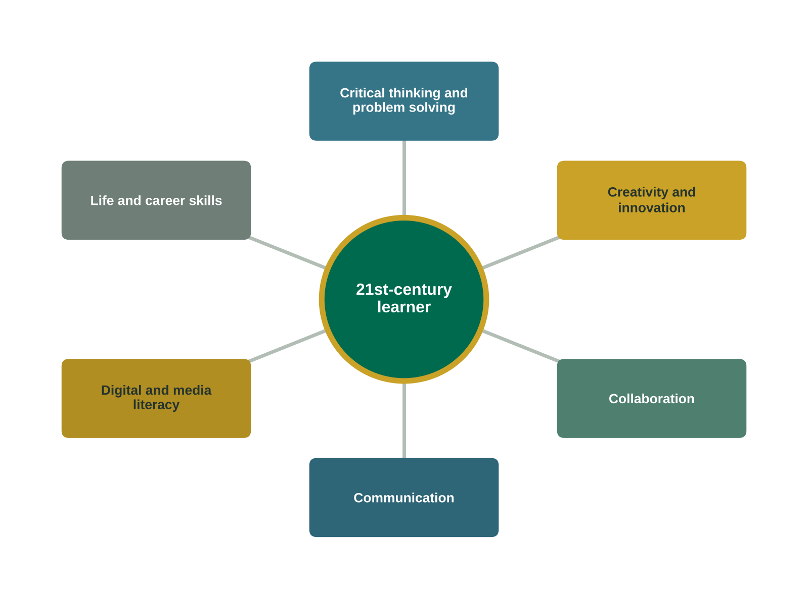
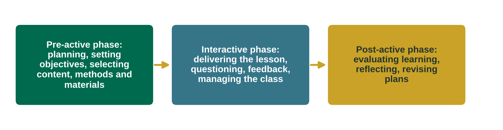
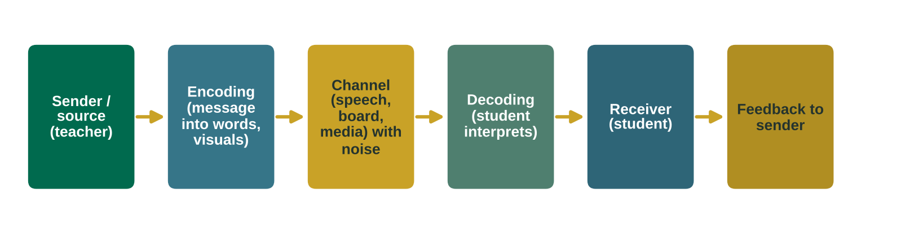
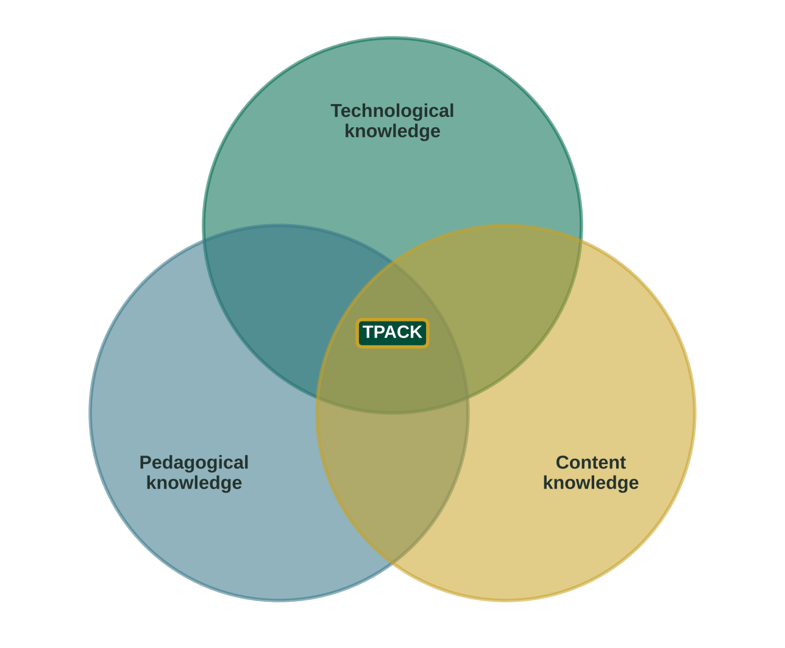
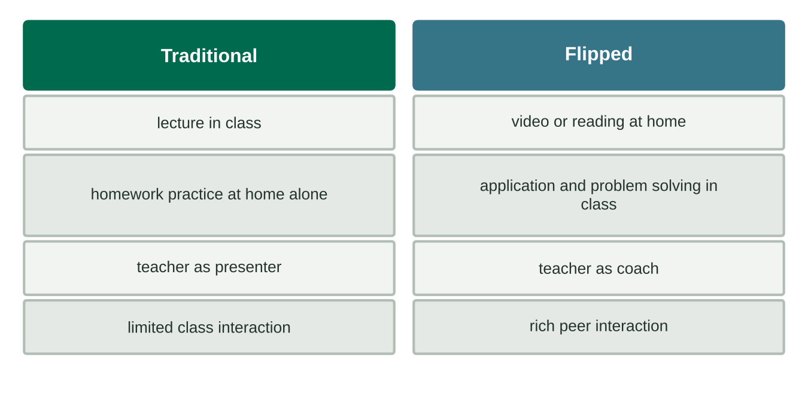
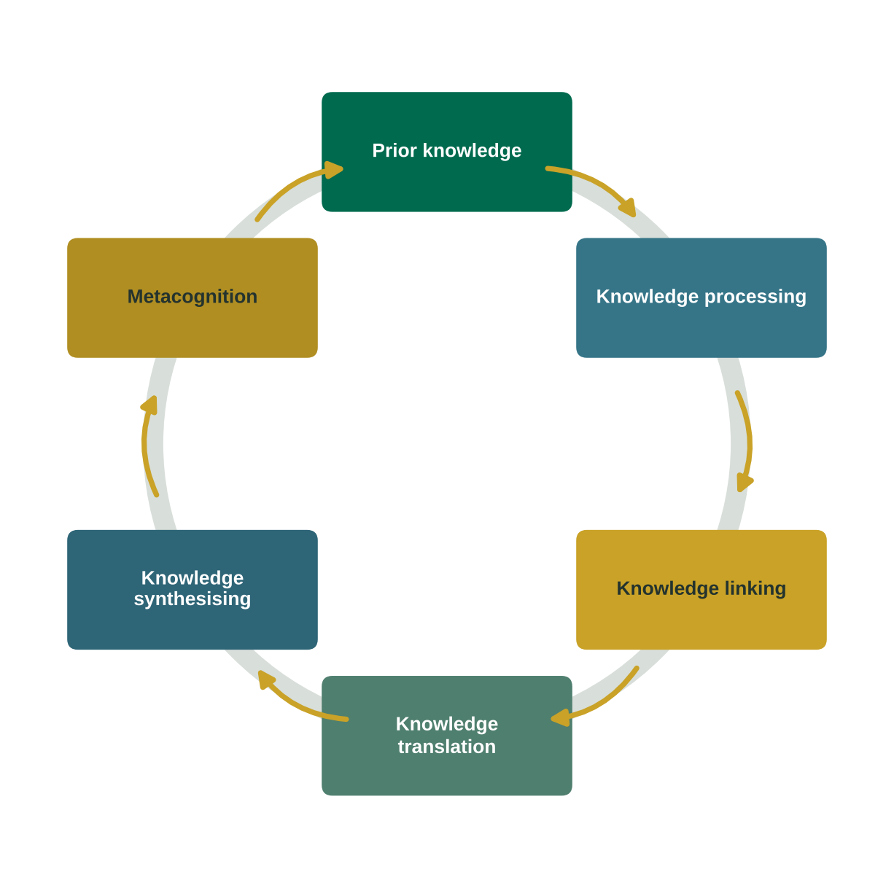

<!DOCTYPE html>

<html lang="bn">
<head>
<meta charset="utf-8"/>
<meta content="width=device-width, initial-scale=1" name="viewport"/>
<title>PC 114 শিক্ষণ প্রযুক্তি · শিক্ষার্থীদের পাঠ নোট</title>
<meta content="কার্যকর শিক্ষাদান, যোগাযোগ, উপকরণ, পদ্ধতি, সক্রিয় শিখন প্রক্রিয়া ও পাঠপরিকল্পনা" name="description"/>
<link href="assets/favicon.svg" rel="icon" type="image/svg+xml"/>
<link href="https://fonts.googleapis.com" rel="preconnect"/>
<link crossorigin="" href="https://fonts.gstatic.com" rel="preconnect"/>
<link href="https://fonts.googleapis.com/css2?family=Fraunces:opsz,wght@9..144,400;9..144,500;9..144,600&amp;family=Inter:wght@400;500;600;700&amp;family=Noto+Serif+Bengali:wght@400;600&amp;family=Source+Serif+4:ital,opsz,wght@0,8..60,400;0,8..60,600;1,8..60,400&amp;display=swap" rel="stylesheet"/>
<link href="assets/style.css" rel="stylesheet"/>
<script>try{var t=localStorage.getItem('theme');if(t)document.documentElement.dataset.theme=t}catch(e){}</script>
<link href="https://fonts.googleapis.com/css2?family=Noto+Sans+Bengali:wght@400;500;600;700&amp;family=Noto+Serif+Bengali:wght@400;500;600;700&amp;display=swap" rel="stylesheet"/></head>
<body><a class="skip-link" href="#main">মূল লেখায় চলে যান</a><header class="top">
<button aria-expanded="false" aria-label="কোর্স মেনু খুলুন" class="menu-btn" id="menuBtn">
<svg aria-hidden="true" height="22" viewbox="0 0 24 24" width="22"><path d="M3 6h18M3 12h18M3 18h18" stroke="currentColor" stroke-linecap="round" stroke-width="2"></path></svg>
</button>
<a class="brand" href="bn-index.html"><span aria-hidden="true" class="brand-mark"><svg height="30" viewbox="0 0 32 32" width="30"><circle cx="16" cy="16" fill="none" r="15" stroke="currentColor" stroke-width="1.2"></circle><path d="M8 12.5 16 9l8 3.5-8 3.5z" fill="currentColor"></path><path d="M11 14.2v4.3c0 1.6 2.2 2.9 5 2.9s5-1.3 5-2.9v-4.3" fill="none" stroke="currentColor" stroke-width="1.3"></path></svg></span><span class="brand-text">Education <em>Study Notes</em></span></a>
<div class="search" role="search">
<input aria-label="সব নোটে খুঁজুন" autocomplete="off" id="q" placeholder="সব নোটে খুঁজুন" type="search"/>
<div class="results" hidden="" id="results"></div>
</div>
<a aria-label="Read this page in English" class="lang-switch" href="pc114.html" hreflang="en" lang="en">English</a><button aria-label="লাইট বা ডার্ক মোড বদলান" class="theme-btn" id="themeBtn">
<svg aria-hidden="true" height="20" viewbox="0 0 24 24" width="20"><path d="M21 12.8A9 9 0 1 1 11.2 3a7 7 0 0 0 9.8 9.8z" fill="currentColor"></path></svg>
</button>
</header>
<div class="layout">
<nav aria-label="কোর্সসমূহ" class="side" id="side"><a class="side-home" href="bn-index.html">প্রথম পাতা</a> <a class="side-home" href="bn-practice.html">MCQ অনুশীলন</a><div class="side-group"><div class="side-glabel">বি.এড (অনার্স) মূল কোর্সসমূহ</div><ul>
<li><a href="pc111.html"><span class="code">PC 111</span> শিক্ষা পরিচিতি</a></li>
<li><a href="bn-pc112.html"><span class="code">PC 112</span> বাংলাদেশের শিক্ষা</a></li>
<li><a href="bn-pc113.html"><span class="code">PC 113</span> শিক্ষা মনোবিজ্ঞান</a></li>
<li class="current"><a href="bn-pc114.html"><span class="code">PC 114</span> শিক্ষণ প্রযুক্তি</a><ul class="side-toc">
<li><a data-toc="unit-1-key-concepts-of-instructional-technology" href="#unit-1-key-concepts-of-instructional-technology">ইউনিট ১: শিক্ষণ প্রযুক্তির মৌলিক ধারণা</a></li>
<li><a data-toc="unit-2-effective-teaching-and-the-role-of-the-facilitator" href="#unit-2-effective-teaching-and-the-role-of-the-facilitator">ইউনিট ২: কার্যকর শিক্ষাদান ও সহায়তাকারীর ভূমিকা</a></li>
<li><a data-toc="unit-3-effective-communication-in-teaching-and-learning" href="#unit-3-effective-communication-in-teaching-and-learning">ইউনিট ৩: শিখন-শেখানোতে কার্যকর যোগাযোগ</a></li>
<li><a data-toc="unit-4-effective-management-of-classroom-learning" href="#unit-4-effective-management-of-classroom-learning">ইউনিট ৪: শ্রেণিকক্ষে শিখনের কার্যকর ব্যবস্থাপনা</a></li>
<li><a data-toc="unit-5-creative-use-of-instructional-materials" href="#unit-5-creative-use-of-instructional-materials">ইউনিট ৫: শিক্ষা উপকরণের সৃজনশীল ব্যবহার</a></li>
<li><a data-toc="unit-6-classroom-methods-and-techniques" href="#unit-6-classroom-methods-and-techniques">ইউনিট ৬: শ্রেণিকক্ষের পদ্ধতি ও কৌশল</a></li>
<li><a data-toc="unit-7-knowledge-of-practice-in-action" href="#unit-7-knowledge-of-practice-in-action">ইউনিট ৭: কার্যক্ষেত্রে অনুশীলনের জ্ঞান</a></li>
<li><a data-toc="unit-8-procedures-of-teaching-and-lesson-planning" href="#unit-8-procedures-of-teaching-and-lesson-planning">ইউনিট ৮: শিক্ষাদানের কার্যপ্রণালী ও পাঠপরিকল্পনা</a></li>
<li><a data-toc="unit-9-dynamic-systems" href="#unit-9-dynamic-systems">ইউনিট ৯: গতিশীল শিক্ষণ ব্যবস্থাসমূহ</a></li>
<li><a data-toc="reading-list" href="#reading-list">পাঠতালিকা</a></li>
<li><a data-toc="exam-preparation-bank" href="#exam-preparation-bank">পরীক্ষা প্রস্তুতি প্রশ্নব্যাংক</a></li>
<li><a data-toc="references" href="#references">তথ্যসূত্র</a></li>
</ul>
</li>
<li><a href="pc115.html"><span class="code">PC 115</span> শিক্ষার দার্শনিক ভিত্তি</a></li>
<li><a href="pc116.html"><span class="code">PC 116</span> শিক্ষার সমাজতাত্ত্বিক ভিত্তি</a></li>
<li><a href="pc117.html"><span class="code">PC 117</span> শিক্ষায় মূল্যায়ন পরিচিতি</a></li>
<li><a href="pc118.html"><span class="code">PC 118</span> শিক্ষাপ্রতিষ্ঠানের সংগঠন ও ব্যবস্থাপনা</a></li>
<li><a href="pc119.html"><span class="code">PC 119</span> শিক্ষা ও উন্নয়ন</a></li>
<li><a href="pc120.html"><span class="code">PC 120</span> শিক্ষাক্রম পরিচিতি</a></li>
<li><a href="bn-pc121.html"><span class="code">PC 121</span> মূল্যবোধ শিক্ষা</a></li>
<li><a href="pc122.html"><span class="code">PC 122</span> জেন্ডার শিক্ষা</a></li>
<li><a href="bn-pc123.html"><span class="code">PC 123</span> পরিবেশ শিক্ষা</a></li>
<li><a href="pc124.html"><span class="code">PC 124</span> উপানুষ্ঠানিক ও জীবনব্যাপী শিক্ষা</a></li>
<li><a href="pc125.html"><span class="code">PC 125</span> শিক্ষা গবেষণা পরিচিতি</a></li>
<li><a href="pc126.html"><span class="code">PC 126</span> শিক্ষায় পরিসংখ্যান</a></li>
<li><a href="pc127.html"><span class="code">PC 127</span> শিক্ষায় একীভূতকরণ</a></li>
</ul></div>
<div class="side-group"><div class="side-glabel">এম.এড কোর্সসমূহ</div><ul>
<li><a href="ed501.html"><span class="code">ED 501</span> বৈশ্বিক প্রেক্ষাপটে শিক্ষা</a></li>
<li><a href="ed502.html"><span class="code">ED 502</span> শিক্ষায় নীতি, কৌশল ও নেতৃত্ব</a></li>
<li><a href="ed503.html"><span class="code">ED 503</span> শিক্ষায় তথ্য ও যোগাযোগ প্রযুক্তি</a></li>
<li><a href="ed504.html"><span class="code">ED 504</span> শিক্ষা গবেষণার পদ্ধতি ও কৌশল</a></li>
<li><a href="eer580.html"><span class="code">EER 580</span> শিক্ষা গবেষণায় পরিসংখ্যান</a></li>
<li><a href="eer581.html"><span class="code">EER 581</span> শিক্ষায় পরিবর্তনের জন্য গবেষণা</a></li>
<li><a href="eer582.html"><span class="code">EER 582</span> শিক্ষায় মূল্যায়ন ও যাচাইয়ের কৌশল</a></li>
<li><a href="eer583.html"><span class="code">EER 583</span> শিক্ষা গবেষণার অনুশীলন</a></li>
</ul></div>
<div class="side-group"><div class="side-glabel">উন্মুক্ত ও দূরশিক্ষণ</div><ul>
<li><a href="odl.html"><span class="code">ODL</span> উন্মুক্ত ও দূরশিক্ষণ</a></li>
</ul></div>
<div class="side-group"><div class="side-glabel">পাঠ্যসূচির বাইরে</div><ul>
<li><a href="trends-2026.html"><span class="code">Trends 2026</span> আজকের শিক্ষা: প্রত্যেক শিক্ষাবিদের জানা দরকার এমন খবর, প্রবণতা, তত্ত্ব ও পদ্ধতি</a></li>
</ul></div>
</nav>
<div class="scrim" id="scrim"></div>
<main class="main" id="main" tabindex="-1">
<article class="course" data-course="pc114.html">
<header class="hero">
<div class="kicker">বি.এড (অনার্স) মূল কোর্স · শিক্ষার্থীদের পাঠ নোট</div>
<h1 class="course-title"><span class="code-pill">PC 114</span> শিক্ষণ প্রযুক্তি</h1>
<p class="subtitle">কার্যকর শিক্ষাদান, যোগাযোগ, উপকরণ, পদ্ধতি, সক্রিয় শিখন প্রক্রিয়া ও পাঠপরিকল্পনা</p>
<dl class="meta"><div><dt>ক্রেডিট আওয়ার</dt><dd>৪</dd></div><div><dt>ইউনিট</dt><dd>৯</dd></div><div><dt>যার ভিত্তিতে রচিত</dt><dd>কোর্সের পাঠ্যসূচি; Smaldino et al. (2019), Reigeluth (1999), Dale (1969), Gagné (1985), Petty (2009), Kyriacou (2009) এবং অন্যান্য উৎস</dd></div></dl>
<div class="hero-actions"><button aria-label="শুরু থেকে এই সম্পূর্ণ নোট শুনুন" class="btn tts-btn" data-tts="all" type="button"><span aria-hidden="true">▶</span> সম্পূর্ণ নোট শুনুন</button><a class="btn ghost" download="" href="pdf/bn-pc114.pdf">PDF ডাউনলোড করুন</a><a class="btn ghost" href="bn-practice.html?course=pc114.html">MCQ অনুশীলন করুন</a><a class="btn ghost" href="#reading-list">পাঠতালিকা</a></div>
<div class="progress"><div class="bar"><span id="pbar"></span></div><span id="ptext"></span></div>
</header><p class="bn-note">এটি ইংরেজি পাঠ নোটের বাংলা সংস্করণ। পাঠতালিকা ও তথ্যসূত্রের বইয়ের নাম মূল ভাষায় রাখা হয়েছে, যাতে লাইব্রেরিতে সহজে খুঁজে পান।</p>
<details class="toc" open=""><summary>সূচিপত্র</summary><ol><li><a href="#unit-1-key-concepts-of-instructional-technology">ইউনিট ১: শিক্ষণ প্রযুক্তির মৌলিক ধারণা</a><span class="tick" data-tick="unit-1-key-concepts-of-instructional-technology"></span></li><li><a href="#unit-2-effective-teaching-and-the-role-of-the-facilitator">ইউনিট ২: কার্যকর শিক্ষাদান ও সহায়তাকারীর ভূমিকা</a><span class="tick" data-tick="unit-2-effective-teaching-and-the-role-of-the-facilitator"></span></li><li><a href="#unit-3-effective-communication-in-teaching-and-learning">ইউনিট ৩: শিখন-শেখানোতে কার্যকর যোগাযোগ</a><span class="tick" data-tick="unit-3-effective-communication-in-teaching-and-learning"></span></li><li><a href="#unit-4-effective-management-of-classroom-learning">ইউনিট ৪: শ্রেণিকক্ষে শিখনের কার্যকর ব্যবস্থাপনা</a><span class="tick" data-tick="unit-4-effective-management-of-classroom-learning"></span></li><li><a href="#unit-5-creative-use-of-instructional-materials">ইউনিট ৫: শিক্ষা উপকরণের সৃজনশীল ব্যবহার</a><span class="tick" data-tick="unit-5-creative-use-of-instructional-materials"></span></li><li><a href="#unit-6-classroom-methods-and-techniques">ইউনিট ৬: শ্রেণিকক্ষের পদ্ধতি ও কৌশল</a><span class="tick" data-tick="unit-6-classroom-methods-and-techniques"></span></li><li><a href="#unit-7-knowledge-of-practice-in-action">ইউনিট ৭: কার্যক্ষেত্রে অনুশীলনের জ্ঞান</a><span class="tick" data-tick="unit-7-knowledge-of-practice-in-action"></span></li><li><a href="#unit-8-procedures-of-teaching-and-lesson-planning">ইউনিট ৮: শিক্ষাদানের কার্যপ্রণালী ও পাঠপরিকল্পনা</a><span class="tick" data-tick="unit-8-procedures-of-teaching-and-lesson-planning"></span></li><li><a href="#unit-9-dynamic-systems">ইউনিট ৯: গতিশীল শিক্ষণ ব্যবস্থাসমূহ</a><span class="tick" data-tick="unit-9-dynamic-systems"></span></li><li><a href="#reading-list">পাঠতালিকা</a><span class="tick" data-tick="reading-list"></span></li><li><a href="#exam-preparation-bank">পরীক্ষা প্রস্তুতি প্রশ্নব্যাংক</a><span class="tick" data-tick="exam-preparation-bank"></span></li><li><a href="#references">তথ্যসূত্র</a><span class="tick" data-tick="references"></span></li></ol></details>
<div class="prose">
<h3 id="about-this-course">এই কোর্স সম্পর্কে</h3>
<p>শিক্ষণ প্রযুক্তি (Instructional Technology) শিক্ষাদানের "সফটওয়্যার" (পদ্ধতি, কৌশল, যোগাযোগ ও পরিকল্পনা) এবং "হার্ডওয়্যার" (যন্ত্রপাতি, মাধ্যম ও ডিজিটাল প্ল্যাটফর্ম) একত্র করে। এই নোটে এই ক্ষেত্রটির সংজ্ঞা দেওয়া হয়েছে, কার্যকর শিক্ষাদান সম্পর্কে গবেষণা কী বলে তা তুলে ধরা হয়েছে, যোগাযোগ ও শ্রেণিকক্ষ ব্যবস্থাপনা ব্যাখ্যা করা হয়েছে, শিক্ষা উপকরণ কীভাবে নির্বাচন ও ব্যবহার করতে হয় তা দেখানো হয়েছে (ডেলের অভিজ্ঞতা কোণ ও শিখন ব্যবস্থাপনা পদ্ধতিসহ), এবং এরপর "কার্যক্ষেত্রে অনুশীলনের জ্ঞান" কাঠামো অনুসারে সাজানো চল্লিশটিরও বেশি সক্রিয় শিখন কার্যপ্রণালীর একটি ব্যবহারিক সংকলন দেওয়া হয়েছে। শেষ ইউনিটগুলোতে বার্ষিক, ইউনিট ও দৈনিক পাঠপরিকল্পনা এবং ডাল্টন পরিকল্পনা, কিন্ডারগার্টেন, মন্তেসরি, বহুশ্রেণি ও বহুস্তর শিক্ষাদানের মতো ঐতিহাসিকভাবে গুরুত্বপূর্ণ ব্যবস্থাগুলো আলোচনা করা হয়েছে।</p>
<h3 id="course-objectives">কোর্সের উদ্দেশ্য</h3>
<ul>
<li><p>শিক্ষণ (instruction), প্রযুক্তি, শিক্ষণ প্রযুক্তি ও সংশ্লিষ্ট পরিভাষাগুলো ব্যাখ্যা করা।</p></li>
<li><p>কার্যকর শিক্ষণের বৈশিষ্ট্য ও নির্দেশকসমূহ এবং সহায়তাকারীর (facilitator) ভূমিকা আত্মস্থ করা।</p></li>
<li><p>শিক্ষাদানে কার্যকর যোগাযোগ ও শ্রেণিকক্ষ ব্যবস্থাপনা প্রয়োগ করা।</p></li>
<li><p>স্বল্পব্যয়ী ও ডিজিটাল উপকরণসহ শিক্ষা উপকরণ নির্বাচন, প্রস্তুত, ব্যবহার ও সংরক্ষণ করা।</p></li>
<li><p>বিভিন্ন ধরনের শিক্ষণ পদ্ধতি ও কৌশল ব্যবহার করা এবং বার্ষিক, ইউনিট ও পাঠপরিকল্পনা প্রণয়ন করা।</p></li>
</ul>
<div class="box box-howto"><div class="box-label">এই নোট কীভাবে পড়বেন</div>
<p>প্রতিটি ইউনিট অফিশিয়াল পাঠ্যসূচির ক্রম অনুসরণ করে। প্রথমে মূল আলোচনা পড়ুন, তারপর <strong>মূল কথা</strong> বক্সগুলো, এরপর <strong>পরীক্ষার প্রস্তুতি</strong> প্রশ্ন দিয়ে নিজেকে যাচাই করুন।</p>
<p>সোনালি বক্স = অবশ্যই মনে রাখার বিষয়। সবুজাভ নীল বক্স = সংজ্ঞা ও পড়ার কৌশল। সবুজ বক্স = বাংলাদেশ প্রেক্ষাপট।</p>
<p>শেষ অধ্যায়টি বিশ্ববিদ্যালয় পরীক্ষার ধরনে একটি প্রশ্নব্যাংক (উত্তরসহ MCQ, সংক্ষিপ্ত ও রচনামূলক প্রশ্ন), এরপর APA 7th রীতিতে পূর্ণ তথ্যসূত্র।</p>
<p>ভর্তি, বাজেট ও নীতি সংক্রান্ত পরিসংখ্যান প্রতি বছর বদলায়। পরীক্ষার আগে BANBEIS, DPE, UGC ও UNESCO-এর সর্বশেষ তথ্য দেখে নিন।</p></div>
<h1 id="unit-1-key-concepts-of-instructional-technology">ইউনিট ১: শিক্ষণ প্রযুক্তির মৌলিক ধারণা</h1><div aria-label="ইউনিট ১-এর টুলস: শিক্ষণ প্রযুক্তির মৌলিক ধারণা" class="unit-tools" role="group"><button aria-label="ইউনিট ১ শুনুন: শিক্ষণ প্রযুক্তির মৌলিক ধারণা" class="tts-btn" data-target="unit-1-key-concepts-of-instructional-technology" data-tts="unit" type="button"><span aria-hidden="true">▶</span> এই অধ্যায় শুনুন</button><button aria-label="ইউনিট ১-এর সারসংক্ষেপ শুনুন: শিক্ষণ প্রযুক্তির মৌলিক ধারণা" class="tts-btn" data-target="sum-unit-1-key-concepts-of-instructional-technology" data-tts="summary" type="button"><span aria-hidden="true">▶</span> সারসংক্ষেপ শুনুন</button><button class="done-btn" data-unit="unit-1-key-concepts-of-instructional-technology" type="button">পড়া শেষ হিসেবে চিহ্নিত করুন</button></div><details class="unit-summary" id="sum-unit-1-key-concepts-of-instructional-technology"><summary>অধ্যায়ের সারসংক্ষেপ</summary><div class="sum-body"><p>চিত্র ১. শিক্ষণ প্রযুক্তির হার্ডওয়্যার ও সফটওয়্যার মাত্রা</p><p><strong>এই অধ্যায়ে যা আছে:</strong> মূল পরিভাষা।</p><p><strong>মনে রাখার মূল বিষয়:</strong></p><ul><li>শিক্ষা প্রযুক্তি শিক্ষণ প্রযুক্তির চেয়ে ব্যাপকতর: এটি প্রশাসন, পরিকল্পনা ও সমগ্র ব্যবস্থাকে অন্তর্ভুক্ত করে, অন্যদিকে শিক্ষণ প্রযুক্তি শিক্ষণের নকশা প্রণয়ন ও উপস্থাপনের সঙ্গে সম্পর্কিত।</li></ul></div></details><details class="curriculum" open=""><summary><span class="cur-label">শিক্ষাক্রমে যা বলা হয়েছে</span><span class="cur-unit">ইউনিট ১: শিক্ষণ প্রযুক্তির মৌলিক ধারণা · ৩ কন্টাক্ট আওয়ার</span></summary><div class="cur-h">শিখনফল</div><p class="cur-lead">এই ইউনিট শেষে শিক্ষার্থীরা যা পারবে</p><ol type="a"><li>শিক্ষণ, প্রযুক্তি, শিক্ষণ প্রযুক্তি ও অন্যান্য সংশ্লিষ্ট পরিভাষার ধারণা, প্রকৃতি ও পরিধি ব্যাখ্যা করতে</li></ol><div class="cur-h">বিষয়বস্তু</div><ul><li>প্রযুক্তি, শিক্ষণ প্রযুক্তি, শিক্ষা প্রযুক্তি, শিক্ষাদান, শিক্ষণ, সফটওয়্যার ও হার্ডওয়্যার, শিখনের সুযোগ, শিক্ষা উপকরণ, সম্পূরক উপকরণ, শিক্ষণ সহায়ক উপকরণ, শিক্ষক সহায়িকা, শিক্ষক সংস্করণ, শিক্ষকের নির্দেশনা, শিক্ষকের শিক্ষাক্রম নির্দেশিকা, শিক্ষক যোগ্যতা/শিক্ষক মানদণ্ড</li></ul></details>
<h2 id="core-terms">১.১ মূল পরিভাষা</h2>
<div class="table-wrap"><table>
<thead>
<tr class="header">
<th><strong>পরিভাষা</strong></th>
<th><strong>অর্থ</strong></th>
</tr>
<tr class="odd">
<th>প্রযুক্তি (Technology)</th>
<th>গ্রিক <em>techne</em> (শিল্প, কারুকাজ) এবং <em>logos</em> (অধ্যয়ন) থেকে উদ্ভূত: ব্যবহারিক কাজে বৈজ্ঞানিক বা সুসংগঠিত জ্ঞানের নিয়মতান্ত্রিক প্রয়োগ (Galbraith, 1967)। প্রযুক্তি শুধু যন্ত্র নয়, প্রক্রিয়াকেও অন্তর্ভুক্ত করে।</th>
</tr>
<tr class="header">
<th>শিক্ষা প্রযুক্তি (Educational technology)</th>
<th>"উপযুক্ত প্রযুক্তিগত প্রক্রিয়া ও সম্পদ সৃষ্টি, ব্যবহার ও ব্যবস্থাপনার মাধ্যমে শিখন সহজতর করা ও কর্মদক্ষতা উন্নয়নের অধ্যয়ন ও নৈতিক অনুশীলন" (AECT; Januszewski &amp; Molenda, 2008)। এটি সমগ্র শিক্ষাব্যবস্থাকে অন্তর্ভুক্ত করে।</th>
</tr>
<tr class="odd">
<th>শিক্ষণ প্রযুক্তি (Instructional technology)</th>
<th>"শিখনের জন্য প্রক্রিয়া ও সম্পদের নকশা প্রণয়ন, উন্নয়ন, ব্যবহার, ব্যবস্থাপনা ও মূল্যায়নের তত্ত্ব ও অনুশীলন" (Seels &amp; Richey, 1994)। এটি শিখন-শেখানো প্রক্রিয়ার ওপর গুরুত্ব দেয়।</th>
</tr>
<tr class="header">
<th>শিক্ষাদান (Teaching)</th>
<th>যেসব কার্যক্রমের মাধ্যমে একজন শিক্ষক শিক্ষার্থীদের শিখতে সাহায্য করেন; এতে শিক্ষণ, নির্দেশনা ও পারস্পরিক সম্পর্ক অন্তর্ভুক্ত।</th>
</tr>
<tr class="odd">
<th>শিক্ষণ (Instruction)</th>
<th>অভ্যন্তরীণ শিখন প্রক্রিয়াকে সহায়তা করার জন্য পরিকল্পিতভাবে সাজানো বাহ্যিক ঘটনাবলির একটি সমষ্টি (Gagné, 1985)। এটি শিক্ষাদানের পরিকল্পিত ও লক্ষ্যভিত্তিক অংশ।</th>
</tr>
<tr class="header">
<th>হার্ডওয়্যার (Hardware)</th>
<th>ভৌত যন্ত্রপাতি: প্রজেক্টর, কম্পিউটার, স্মার্ট বোর্ড, অডিও যন্ত্র, মডেল, গবেষণাগারের সরঞ্জাম।</th>
</tr>
<tr class="odd">
<th>সফটওয়্যার (Software)</th>
<th>পদ্ধতি, কৌশল, কর্মসূচি, বিষয়বস্তু ও ডিজিটাল অ্যাপ্লিকেশন, যা হার্ডওয়্যারকে শিক্ষাগতভাবে উপযোগী করে তোলে।</th>
</tr>
<tr class="header">
<th>শিখনের সুযোগ (Learning opportunity)</th>
<th>পরিকল্পিত বা আকস্মিক যেকোনো পরিস্থিতি, যা শিক্ষার্থীকে জ্ঞান, দক্ষতা বা দৃষ্টিভঙ্গি অর্জনের সুযোগ দেয়।</th>
</tr>
<tr class="odd">
<th>শিক্ষা উপকরণ (Instructional materials)</th>
<th>শিখন উদ্দেশ্য অর্জনের জন্য শিক্ষক ও শিক্ষার্থীরা যেসব সম্পদ ব্যবহার করেন: পাঠ্যপুস্তক, চার্ট, মডেল, কার্যপত্র, ডিজিটাল বিষয়বস্তু।</th>
</tr>
<tr class="header">
<th>সম্পূরক উপকরণ (Supplementary materials)</th>
<th>মূল পাঠ্যপুস্তকের বাইরের অতিরিক্ত উপকরণ, যেমন সম্পূরক পঠন-পুস্তক, অনুশীলন খাতা ও সহায়ক গ্রন্থ, যা শিখনকে সমৃদ্ধ বা দৃঢ় করে।</th>
</tr>
<tr class="odd">
<th>শিক্ষণ সহায়ক উপকরণ (Teaching aids)</th>
<th>যেসব উপকরণ শিক্ষককে শিখনকে মূর্ত ও আকর্ষণীয় করতে সাহায্য করে, যেমন দর্শন, শ্রবণ ও দর্শন-শ্রবণ উপকরণ।</th>
</tr>
<tr class="header">
<th>শিক্ষক সহায়িকা (Teacher's guide, TG)</th>
<th>শিক্ষাক্রম কর্তৃপক্ষ (NCTB) প্রণীত একটি দলিল, যাতে প্রতিটি পাঠ কীভাবে পড়াতে হবে তা ব্যাখ্যা করা থাকে: উদ্দেশ্য, ধাপ, কার্যক্রম, মূল্যায়ন।</th>
</tr>
<tr class="odd">
<th>শিক্ষক সংস্করণ (Teacher's edition)</th>
<th>শিক্ষার্থীর পাঠ্যপুস্তকের একটি সংস্করণ, যাতে শিক্ষকের জন্য টীকা, উত্তর ও শিক্ষাদান-বিষয়ক নোট থাকে।</th>
</tr>
<tr class="header">
<th>শিক্ষকের শিক্ষাক্রম নির্দেশিকা (Teacher's curriculum guide)</th>
<th>শিক্ষকদের জন্য শিক্ষাক্রমের যৌক্তিকতা, যোগ্যতা, বিন্যাস ও মূল্যায়ন ব্যাখ্যাকারী একটি নির্দেশিকা।</th>
</tr>
<tr class="odd">
<th>শিক্ষক যোগ্যতা / মানদণ্ড (Teacher competency / standard)</th>
<th>একজন শিক্ষককে যে জ্ঞান, দক্ষতা ও মনোভাব প্রদর্শন করতে হয়, যেমন পেশাগত জ্ঞান, পেশাগত অনুশীলন ও পেশাগত সম্পৃক্ততা (যেমন AITSL, 2011; বাংলাদেশের খসড়া জাতীয় শিক্ষক মানদণ্ড)।</th>
</tr>
</thead>
<tbody>
</tbody>
</table></div>
<p></p>
<p><strong>চিত্র ১.</strong> <em>শিক্ষণ প্রযুক্তির হার্ডওয়্যার ও সফটওয়্যার মাত্রা</em></p>
<div class="box box-key"><div class="box-label">মূল কথা</div>
<p>শিক্ষা প্রযুক্তি শিক্ষণ প্রযুক্তির চেয়ে ব্যাপকতর: এটি প্রশাসন, পরিকল্পনা ও সমগ্র ব্যবস্থাকে অন্তর্ভুক্ত করে, অন্যদিকে শিক্ষণ প্রযুক্তি শিক্ষণের নকশা প্রণয়ন ও উপস্থাপনের সঙ্গে সম্পর্কিত। দুটিই শুধু যন্ত্র নয়, <strong>প্রক্রিয়া</strong>-সংক্রান্ত।</p></div>
<h1 id="unit-2-effective-teaching-and-the-role-of-the-facilitator">ইউনিট ২: কার্যকর শিক্ষাদান ও সহায়তাকারীর ভূমিকা</h1><div aria-label="ইউনিট ২-এর টুলস: কার্যকর শিক্ষাদান ও সহায়তাকারীর ভূমিকা" class="unit-tools" role="group"><button aria-label="ইউনিট ২ শুনুন: কার্যকর শিক্ষাদান ও সহায়তাকারীর ভূমিকা" class="tts-btn" data-target="unit-2-effective-teaching-and-the-role-of-the-facilitator" data-tts="unit" type="button"><span aria-hidden="true">▶</span> এই অধ্যায় শুনুন</button><button aria-label="ইউনিট ২-এর সারসংক্ষেপ শুনুন: কার্যকর শিক্ষাদান ও সহায়তাকারীর ভূমিকা" class="tts-btn" data-target="sum-unit-2-effective-teaching-and-the-role-of-the-facilitator" data-tts="summary" type="button"><span aria-hidden="true">▶</span> সারসংক্ষেপ শুনুন</button><button class="done-btn" data-unit="unit-2-effective-teaching-and-the-role-of-the-facilitator" type="button">পড়া শেষ হিসেবে চিহ্নিত করুন</button></div><details class="unit-summary" id="sum-unit-2-effective-teaching-and-the-role-of-the-facilitator"><summary>অধ্যায়ের সারসংক্ষেপ</summary><div class="sum-body"><p>শিক্ষাদান একটি সঞ্চারণ (transmission) মডেল (শিক্ষক জ্ঞানের উৎস, শিক্ষার্থীরা নিষ্ক্রিয় গ্রহীতা; ফ্রেইরি যাকে "ব্যাংকিং শিক্ষা" বলেছেন) থেকে শিক্ষার্থীকেন্দ্রিক, গঠনবাদী ও সহায়তামূলক মডেলের দিকে অগ্রসর হয়েছে, যেখানে শিক্ষকেরা এমন অভিজ্ঞতার নকশা করেন যা শিক্ষার্থীদের বোধগম্যতা গড়ে তুলতে, সহযোগিতা করতে ও সমালোচনামূলকভাবে চিন্তা করতে সাহায্য করে। প্রধান চালিকাশক্তির মধ্যে রয়েছে গঠনবাদী শিখন তত্ত্ব, জ্ঞানীয় বিজ্ঞান, জ্ঞানভিত্তিক অর্থনীতি ও ডিজিটাল…</p><p><strong>এই অধ্যায়ে যা আছে:</strong> শিক্ষাদান সম্পর্কে পরিবর্তিত দৃষ্টিভঙ্গি; শিক্ষাদানে একবিংশ শতাব্দীর দক্ষতা; শ্রেণিকক্ষে ও অনলাইনে সহায়তাকারী হিসেবে শিক্ষক; শিক্ষাদানের বিভিন্ন দিক; শিক্ষাদানের পর্যায় (Jackson, 1968); কার্যকর শিক্ষাদানের মানদণ্ড ও প্রভাবকসমূহ।</p><p><strong>মনে রাখার মূল বিষয়:</strong></p><ul><li>Coe et al.</li></ul></div></details><details class="curriculum" open=""><summary><span class="cur-label">শিক্ষাক্রমে যা বলা হয়েছে</span><span class="cur-unit">ইউনিট ২: কার্যকর শিক্ষাদান ও সহায়তাকারীর ভূমিকা · ৪ কন্টাক্ট আওয়ার</span></summary><div class="cur-h">শিখনফল</div><p class="cur-lead">এই ইউনিট শেষে শিক্ষার্থীরা যা পারবে</p><ol type="a"><li>কার্যকর শিক্ষণের মৌলিক বৈশিষ্ট্য ও নির্দেশকসমূহ বিশ্লেষণ ও আত্মস্থ করতে এবং শিখন প্রক্রিয়ায় কার্যকর সহায়তাকারী হিসেবে নিজেদের ভূমিকা চিহ্নিত করতে</li></ol><div class="cur-h">বিষয়বস্তু</div><ul><li>শিক্ষাদান সম্পর্কে পরিবর্তিত দৃষ্টিভঙ্গি</li><li>শিক্ষাদানে একবিংশ শতাব্দীর দক্ষতা বিবেচনা</li><li>শ্রেণিকক্ষে ও অনলাইন ক্লাসে সহায়তাকারী হিসেবে শিক্ষকের পরিবর্তিত ভূমিকা</li><li>শিক্ষাদানের বিভিন্ন দিক: ব্যাখ্যামূলক শিক্ষাদান; মিথস্ক্রিয়ামূলক শিক্ষাদান; অনুসন্ধানমূলক শিক্ষাদান; বাস্তবতার মডেল</li><li>শিক্ষাদানের পর্যায়: প্রাক-সক্রিয়, মিথস্ক্রিয় ও উত্তর-সক্রিয় পর্যায়</li><li>কার্যকর শিক্ষাদানের মানদণ্ড ও প্রভাবকসমূহ</li></ul></details>
<h2 id="changing-perspectives-of-teaching">২.১ শিক্ষাদান সম্পর্কে পরিবর্তিত দৃষ্টিভঙ্গি</h2>
<p>শিক্ষাদান একটি <strong>সঞ্চারণ</strong> (transmission) মডেল (শিক্ষক জ্ঞানের উৎস, শিক্ষার্থীরা নিষ্ক্রিয় গ্রহীতা; পাওলো ফ্রেইরি (Paulo Freire) যাকে "ব্যাংকিং শিক্ষা" বলেছেন) থেকে <strong>শিক্ষার্থীকেন্দ্রিক, গঠনবাদী ও সহায়তামূলক</strong> মডেলের দিকে অগ্রসর হয়েছে, যেখানে শিক্ষকেরা এমন অভিজ্ঞতার নকশা করেন যা শিক্ষার্থীদের বোধগম্যতা গড়ে তুলতে, সহযোগিতা করতে ও সমালোচনামূলকভাবে চিন্তা করতে সাহায্য করে। প্রধান চালিকাশক্তির মধ্যে রয়েছে গঠনবাদী (constructivist) শিখন তত্ত্ব, জ্ঞানীয় বিজ্ঞান, জ্ঞানভিত্তিক অর্থনীতি ও ডিজিটাল প্রযুক্তি।</p>
<div class="table-wrap"><table>
<thead>
<tr class="header">
<th><strong>প্রচলিত</strong></th>
<th><strong>সমকালীন</strong></th>
</tr>
<tr class="odd">
<th>শিক্ষককেন্দ্রিক</th>
<th>শিক্ষার্থীকেন্দ্রিক</th>
</tr>
<tr class="header">
<th>জ্ঞান সঞ্চারণ</th>
<th>জ্ঞান নির্মাণ</th>
</tr>
<tr class="odd">
<th>পাঠ্যপুস্তকই একমাত্র উৎস</th>
<th>ডিজিটালসহ বহুবিধ সম্পদ</th>
</tr>
<tr class="header">
<th>ব্যক্তিগত প্রতিযোগিতা</th>
<th>সহযোগিতা</th>
</tr>
<tr class="odd">
<th>মুখস্থকরণ, সামষ্টিক অভীক্ষা</th>
<th>অনুধাবন, গঠনকালীন মূল্যায়ন</th>
</tr>
<tr class="header">
<th>কর্তৃত্বশীল শিক্ষক</th>
<th>সহায়তাকারী, প্রশিক্ষক ও সহ-শিক্ষার্থী হিসেবে শিক্ষক</th>
</tr>
</thead>
<tbody>
</tbody>
</table></div>
<h2 id="st-century-skills-in-teaching">২.২ শিক্ষাদানে একবিংশ শতাব্দীর দক্ষতা</h2>
<p>Partnership for 21st Century Learning (P21) কাঠামো <strong>4C</strong>-এর ওপর গুরুত্ব দেয়: সমালোচনামূলক চিন্তন, সৃজনশীলতা, সহযোগিতা ও যোগাযোগ। এর পাশাপাশি রয়েছে তথ্য, গণমাধ্যম ও ICT সাক্ষরতা এবং জীবন ও পেশাগত দক্ষতা (নমনীয়তা, উদ্যোগ, সামাজিক ও আন্তঃসাংস্কৃতিক দক্ষতা, উৎপাদনশীলতা, নেতৃত্ব)। OECD-এর <em>Learning Compass 2030</em> এর সঙ্গে রূপান্তরমূলক যোগ্যতা যুক্ত করেছে: নতুন মূল্য সৃষ্টি, টানাপোড়েন ও উভয়সংকটের সমাধান এবং দায়িত্ব গ্রহণ।</p>
<p></p>
<p><strong>চিত্র ২.</strong> <em>4C ও সংশ্লিষ্ট একবিংশ শতাব্দীর দক্ষতা</em></p>
<h2 id="the-teacher-as-facilitator-in-classrooms-and-online">২.৩ শ্রেণিকক্ষে ও অনলাইনে সহায়তাকারী হিসেবে শিক্ষক</h2>
<p>একজন সহায়তাকারী (facilitator) শিখন অভিজ্ঞতার পরিকল্পনা করেন, ভালো প্রশ্ন করেন, ধাপে ধাপে সহায়তা (scaffolding) দেন, সহযোগিতামূলক কাজ সংগঠিত করেন, অগ্রগতি পর্যবেক্ষণ করেন, ফলাবর্তন দেন এবং একটি নিরাপদ পরিবেশ তৈরি করেন। অনলাইনে সহায়তাকারী একটি শিখন প্ল্যাটফর্ম পরিচালনা করেন, অসমকালীন কার্যক্রমের নকশা করেন, <strong>সামাজিক, জ্ঞানীয় ও শিক্ষণগত উপস্থিতি</strong> গড়ে তোলেন (Community of Inquiry কাঠামো; Garrison, Anderson &amp; Archer, 2000) এবং ডিজিটাল সমতা ও অনলাইন নিরাপত্তার দিকে মনোযোগ দেন।</p>
<h2 id="different-aspects-of-teaching">২.৪ শিক্ষাদানের বিভিন্ন দিক</h2>
<p>জয়েস, ওয়েইল ও ক্যালহুন (Joyce, Weil and Calhoun, 2015) এবং এগেন ও কাউচাক (Eggen and Kauchak) শিক্ষাদান পদ্ধতির বিভিন্ন গোষ্ঠী বর্ণনা করেছেন। পাঠ্যসূচিতে চারটি দিক চিহ্নিত করা হয়েছে:</p>
<ul>
<li><p><strong>ব্যাখ্যামূলক শিক্ষাদান (Expository teaching):</strong> শিক্ষক ব্যাখ্যা, বক্তৃতা বা প্রদর্শনের মাধ্যমে সুসংগঠিতভাবে তথ্য উপস্থাপন করেন, প্রায়ই অগ্রিম সংগঠক (advance organiser) ব্যবহার করে (Ausubel)। কাঠামোবদ্ধ জ্ঞান সঞ্চারণে এটি দক্ষ।</p></li>
<li><p><strong>মিথস্ক্রিয়ামূলক শিক্ষাদান (Interactive teaching):</strong> শিক্ষক-শিক্ষার্থী ও শিক্ষার্থী-শিক্ষার্থী মিথস্ক্রিয়ার মাধ্যমে, যেমন প্রশ্নোত্তর, আলোচনা ও সহযোগিতামূলক শিখনের মাধ্যমে জ্ঞান গড়ে ওঠে।</p></li>
<li><p><strong>অনুসন্ধানমূলক শিক্ষাদান (Inquiry teaching):</strong> শিক্ষার্থীরা প্রশ্ন বা সমস্যা অনুসন্ধান করে, প্রমাণ সংগ্রহ করে এবং সিদ্ধান্তে পৌঁছায়, যেমন নির্দেশিত আবিষ্কার, সাচম্যানের (Suchman) অনুসন্ধান প্রশিক্ষণ ও বিজ্ঞান অনুসন্ধানে।</p></li>
<li><p><strong>বাস্তবতার মডেল (Models of reality):</strong> সিমুলেশন, ভূমিকাভিনয়, খেলা, মডেল ও কেস স্টাডি, যা বাস্তব পরিস্থিতিকে উপস্থাপন করে যাতে শিক্ষার্থীরা নিরাপদে সেগুলো অন্বেষণ করতে পারে।</p></li>
</ul>
<h2 id="phases-of-teaching-jackson-1968">২.৫ শিক্ষাদানের পর্যায় (Jackson, 1968)</h2>
<p></p>
<p><strong>চিত্র ৩.</strong> <em>ফিলিপ জ্যাকসনের শিক্ষাদানের তিনটি পর্যায়</em></p>
<h2 id="criteria-and-factors-of-effective-teaching">২.৬ কার্যকর শিক্ষাদানের মানদণ্ড ও প্রভাবকসমূহ</h2>
<p>গবেষণা সংশ্লেষণগুলো (Rosenshine, 2012; Muijs &amp; Reynolds, 2018; Hattie, 2009; Coe et al., 2014) নিম্নোক্ত বৈশিষ্ট্যগুলোর বিষয়ে একমত:</p>
<ol type="1">
<li><p>উদ্দেশ্য ও ব্যাখ্যার <strong>স্পষ্টতা</strong>।</p></li>
<li><p><strong>বিষয়জ্ঞান ও বিষয়ভিত্তিক শিক্ষণজ্ঞানে (pedagogical content knowledge) দক্ষতা।</strong></p></li>
<li><p><strong>কাঠামোবদ্ধ পাঠ:</strong> পুনরালোচনা, ছোট ছোট ধাপে উপস্থাপন, নির্দেশিত অনুশীলন, স্বাধীন অনুশীলন (রোজেনশাইনের দশটি "শিক্ষণ নীতি")।</p></li>
<li><p>এমন <strong>প্রশ্নকরণ</strong> যা সব শিক্ষার্থীর অনুধাবন যাচাই করে এবং চিন্তনকে উৎসাহিত করে।</p></li>
<li><p><strong>গঠনকালীন মূল্যায়ন ও ফলাবর্তন</strong> (Black &amp; Wiliam, 1998)।</p></li>
<li><p><strong>কাজে ব্যয়িত সময় (time on task)</strong> ও দক্ষ শ্রেণিকক্ষ ব্যবস্থাপনা।</p></li>
<li><p><strong>উচ্চ প্রত্যাশা</strong> ও সহায়ক পরিবেশ।</p></li>
<li><p>উদ্দেশ্যের সঙ্গে সংগতিপূর্ণ পদ্ধতির <strong>বৈচিত্র্য</strong>।</p></li>
<li><p><strong>প্রতিফলন</strong> ও নিরবচ্ছিন্ন পেশাগত উন্নয়ন।</p></li>
</ol>
<div class="box box-key"><div class="box-label">মূল কথা</div>
<p>Coe et al. (2014), <em>What makes great teaching?</em>, দেখিয়েছে যে সবচেয়ে জোরালো প্রমাণ পাওয়া যায় (১) বিষয়ভিত্তিক শিক্ষণজ্ঞান ও (২) শিক্ষণের মানের পক্ষে, এরপর শ্রেণিকক্ষের পরিবেশ, শ্রেণিকক্ষ ব্যবস্থাপনা, শিক্ষকের বিশ্বাস ও পেশাগত আচরণ। রচনামূলক উত্তরে উদ্ধৃত করার জন্য এটি একটি চমৎকার উৎস।</p></div>
<h1 id="unit-3-effective-communication-in-teaching-and-learning">ইউনিট ৩: শিখন-শেখানোতে কার্যকর যোগাযোগ</h1><div aria-label="ইউনিট ৩-এর টুলস: শিখন-শেখানোতে কার্যকর যোগাযোগ" class="unit-tools" role="group"><button aria-label="ইউনিট ৩ শুনুন: শিখন-শেখানোতে কার্যকর যোগাযোগ" class="tts-btn" data-target="unit-3-effective-communication-in-teaching-and-learning" data-tts="unit" type="button"><span aria-hidden="true">▶</span> এই অধ্যায় শুনুন</button><button aria-label="ইউনিট ৩-এর সারসংক্ষেপ শুনুন: শিখন-শেখানোতে কার্যকর যোগাযোগ" class="tts-btn" data-target="sum-unit-3-effective-communication-in-teaching-and-learning" data-tts="summary" type="button"><span aria-hidden="true">▶</span> সারসংক্ষেপ শুনুন</button><button class="done-btn" data-unit="unit-3-effective-communication-in-teaching-and-learning" type="button">পড়া শেষ হিসেবে চিহ্নিত করুন</button></div><details class="unit-summary" id="sum-unit-3-effective-communication-in-teaching-and-learning"><summary>অধ্যায়ের সারসংক্ষেপ</summary><div class="sum-body"><p>যোগাযোগ (communication; লাতিন communicare থেকে, যার অর্থ ভাগ করে নেওয়া বা সাধারণ করা) হলো প্রেরক ও গ্রাহকের মধ্যে অর্থ সঞ্চারণ ও ভাগাভাগির প্রক্রিয়া। শ্রেণিকক্ষে এটি দ্বিমুখী, নিরবচ্ছিন্ন, মৌখিক ও অমৌখিক এবং প্রেক্ষাপটনির্ভর।</p><p><strong>এই অধ্যায়ে যা আছে:</strong> ধারণা ও প্রকৃতি; যোগাযোগের ধরন; যোগাযোগের মডেল; শ্রেণিকক্ষে যোগাযোগের প্রতিবন্ধকতা; কার্যকর শ্রেণিকক্ষ যোগাযোগের মানদণ্ড।</p></div></details><details class="curriculum" open=""><summary><span class="cur-label">শিক্ষাক্রমে যা বলা হয়েছে</span><span class="cur-unit">ইউনিট ৩: শিখন-শেখানোতে কার্যকর যোগাযোগ · ৩ কন্টাক্ট আওয়ার</span></summary><div class="cur-h">শিখনফল</div><p class="cur-lead">এই ইউনিট শেষে শিক্ষার্থীরা যা পারবে</p><ol type="a"><li>যোগাযোগ দক্ষতাসমূহ চিহ্নিত করতে এবং শ্রেণিকক্ষ পরিস্থিতিতে সেগুলো প্রয়োগ করতে</li></ol><div class="cur-h">বিষয়বস্তু</div><ul><li>শিখন-শেখানোতে যোগাযোগের ধারণা ও প্রকৃতি</li><li>যোগাযোগের ধরন: মৌখিক, অমৌখিক ও অনভিপ্রেত যোগাযোগ</li><li>যোগাযোগের মডেল, দৃষ্টিভঙ্গি ও ব্যবহার</li><li>শ্রেণিকক্ষে যোগাযোগের প্রতিবন্ধকতা</li><li>কার্যকর শ্রেণিকক্ষ যোগাযোগের মানদণ্ড</li></ul></details>
<h2 id="concept-and-nature">৩.১ ধারণা ও প্রকৃতি</h2>
<p>যোগাযোগ (communication; লাতিন <em>communicare</em> থেকে, যার অর্থ ভাগ করে নেওয়া বা সাধারণ করা) হলো প্রেরক ও গ্রাহকের মধ্যে অর্থ সঞ্চারণ ও ভাগাভাগির প্রক্রিয়া। শ্রেণিকক্ষে এটি দ্বিমুখী, নিরবচ্ছিন্ন, মৌখিক ও অমৌখিক এবং প্রেক্ষাপটনির্ভর। শিক্ষাদান মূলত একটি যোগাযোগ প্রক্রিয়া।</p>
<h2 id="communication-styles">৩.২ যোগাযোগের ধরন</h2>
<ul>
<li><p><strong>মৌখিক (Verbal):</strong> কথ্য ও লিখিত শব্দ। কার্যকর মৌখিক যোগাযোগের জন্য প্রয়োজন স্পষ্টতা, উপযুক্ত শব্দভান্ডার, কণ্ঠস্বরের ওঠানামা (স্বরের উচ্চতা, গতি, জোর, বিরতি) ও প্রশ্নকরণ।</p></li>
<li><p><strong>অমৌখিক (Non-verbal):</strong> মুখভঙ্গি, চোখে চোখ রাখা, অঙ্গভঙ্গি, দেহভঙ্গি, নৈকট্য (proxemics), স্পর্শ, বাহ্যিক চেহারা ও পরাভাষা (paralanguage)। মেহরাবিয়ানের (Mehrabian) বহুল উদ্ধৃত 7–38–55% নিয়ম কেবল অনুভূতি ও মনোভাব প্রকাশের ক্ষেত্রে প্রযোজ্য, সব ধরনের যোগাযোগে নয়; এই সতর্কতাসহ এটি উদ্ধৃত করুন।</p></li>
<li><p><strong>অনভিপ্রেত যোগাযোগ (Unintended communication):</strong> অনিচ্ছাকৃতভাবে প্রেরিত বার্তা, যেমন শিক্ষকের মুখে ফুটে ওঠা একঘেয়েমি, চোখে চোখ রাখার ক্ষেত্রে পক্ষপাত, বা শ্রেণিকক্ষের আসনবিন্যাসের "অপ্রকাশ্য শিক্ষাক্রম" (hidden curriculum)।</p></li>
</ul>
<h2 id="communication-models">৩.৩ যোগাযোগের মডেল</h2>
<p></p>
<p><strong>চিত্র ৪.</strong> <em>শ্রেণিকক্ষ যোগাযোগে ব্যবহৃত ফলাবর্তনসহ শ্যানন–উইভার মডেল (1949)</em></p>
<div class="table-wrap"><table>
<thead>
<tr class="header">
<th><strong>মডেল</strong></th>
<th><strong>মূল ধারণা</strong></th>
<th><strong>শ্রেণিকক্ষে ব্যবহার</strong></th>
</tr>
<tr class="odd">
<th><strong>অ্যারিস্টটলের মডেল</strong></th>
<th>বক্তা, বক্তব্য, শ্রোতা, উপলক্ষ, প্রভাব; ethos, pathos ও logos-এর মাধ্যমে প্ররোচনা</th>
<th>প্ররোচনামূলক ও আকর্ষণীয় বক্তৃতা</th>
</tr>
<tr class="header">
<th><strong>ল্যাসওয়েল (Lasswell, 1948)</strong></th>
<th>কে, কী বলছে, কোন মাধ্যমে, কাকে, কী প্রভাবসহ?</th>
<th>একটি পাঠের বার্তা ও মাধ্যম পরিকল্পনা</th>
</tr>
<tr class="odd">
<th><strong>শ্যানন–উইভার (Shannon–Weaver, 1949)</strong></th>
<th>গোলযোগসহ (noise) রৈখিক সঞ্চারণ</th>
<th>প্রতিবন্ধকতা (গোলযোগ) চিহ্নিতকরণ</th>
</tr>
<tr class="header">
<th><strong>বার্লোর SMCR (Berlo, 1960)</strong></th>
<th>উৎস, বার্তা, মাধ্যম, গ্রাহক; প্রতিটির উপ-প্রভাবক (দক্ষতা, মনোভাব, জ্ঞান, সংস্কৃতি) রয়েছে</th>
<th>শিক্ষক ও শিক্ষার্থীর বৈশিষ্ট্যের মধ্যে সামঞ্জস্য বিধান</th>
</tr>
<tr class="odd">
<th><strong>শ্র্যাম (Schramm, 1954)</strong></th>
<th>অভিন্ন অভিজ্ঞতার ক্ষেত্রসহ মিথস্ক্রিয়ামূলক মডেল</th>
<th>যেখানে অভিজ্ঞতা মিলে যায় সেখানেই যোগাযোগ কার্যকর হয়, তাই শিক্ষার্থীদের অভিজ্ঞতার ওপর ভিত্তি করে পাঠ গড়ে তুলুন</th>
</tr>
<tr class="header">
<th><strong>লেনদেনমূলক (Transactional; Barnlund, 1970)</strong></th>
<th>একই সঙ্গে প্রেরণ ও গ্রহণ</th>
<th>সংলাপভিত্তিক, মিথস্ক্রিয়ামূলক শিক্ষাদান</th>
</tr>
</thead>
<tbody>
</tbody>
</table></div>
<h2 id="barriers-in-classroom-communication">৩.৪ শ্রেণিকক্ষে যোগাযোগের প্রতিবন্ধকতা</h2>
<ul>
<li><p><strong>ভৌত:</strong> গোলমাল, দুর্বল শ্রবণব্যবস্থা, বড় শ্রেণি, অনুপযুক্ত আসনবিন্যাস ও আলো।</p></li>
<li><p><strong>মনস্তাত্ত্বিক:</strong> উদ্বেগ, শিক্ষকের প্রতি ভয়, নিম্ন প্রেষণা, পূর্বসংস্কার।</p></li>
<li><p><strong>অর্থগত / ভাষাগত:</strong> কঠিন শব্দভান্ডার, পারিভাষিক শব্দ, ঘরের ভাষা থেকে ভিন্ন শিক্ষার মাধ্যম (বাংলাদেশে ক্ষুদ্র নৃগোষ্ঠীর শিশুদের ক্ষেত্রে অত্যন্ত প্রাসঙ্গিক)।</p></li>
<li><p><strong>শারীরবৃত্তীয়:</strong> শ্রবণ বা দৃষ্টি প্রতিবন্ধিতা, ক্লান্তি, ক্ষুধা।</p></li>
<li><p><strong>সাংস্কৃতিক:</strong> চোখে চোখ রাখা, নারী-পুরুষের পারস্পরিক আচরণ ও সৌজন্যের ভিন্ন ভিন্ন রীতি।</p></li>
<li><p><strong>শিক্ষক-সংশ্লিষ্ট:</strong> একঘেয়ে কণ্ঠস্বর, অতিরিক্ত গতি, অস্পষ্ট নির্দেশনা, ফলাবর্তনের অভাব।</p></li>
</ul>
<h2 id="criteria-of-effective-classroom-communication">৩.৫ কার্যকর শ্রেণিকক্ষ যোগাযোগের মানদণ্ড</h2>
<p>স্পষ্টতা, সংক্ষিপ্ততা, নির্ভুলতা, সম্পূর্ণতা, সৌজন্য, সুনির্দিষ্টতা ও বিবেচনা ("7 C"); ফলাবর্তনসহ দ্বিমুখী মিথস্ক্রিয়া; সক্রিয় শ্রবণ; উপযুক্ত অমৌখিক সংকেত; একাধিক মাধ্যমের ব্যবহার (দ্বৈত সংকেতায়ন, dual coding); অনুধাবন যাচাই; এবং শ্রদ্ধাশীল ও একীভূত ভঙ্গি।</p>
<h1 id="unit-4-effective-management-of-classroom-learning">ইউনিট ৪: শ্রেণিকক্ষে শিখনের কার্যকর ব্যবস্থাপনা</h1><div aria-label="ইউনিট ৪-এর টুলস: শ্রেণিকক্ষে শিখনের কার্যকর ব্যবস্থাপনা" class="unit-tools" role="group"><button aria-label="ইউনিট ৪ শুনুন: শ্রেণিকক্ষে শিখনের কার্যকর ব্যবস্থাপনা" class="tts-btn" data-target="unit-4-effective-management-of-classroom-learning" data-tts="unit" type="button"><span aria-hidden="true">▶</span> এই অধ্যায় শুনুন</button><button aria-label="ইউনিট ৪-এর সারসংক্ষেপ শুনুন: শ্রেণিকক্ষে শিখনের কার্যকর ব্যবস্থাপনা" class="tts-btn" data-target="sum-unit-4-effective-management-of-classroom-learning" data-tts="summary" type="button"><span aria-hidden="true">▶</span> সারসংক্ষেপ শুনুন</button><button class="done-btn" data-unit="unit-4-effective-management-of-classroom-learning" type="button">পড়া শেষ হিসেবে চিহ্নিত করুন</button></div><details class="unit-summary" id="sum-unit-4-effective-management-of-classroom-learning"><summary>অধ্যায়ের সারসংক্ষেপ</summary><div class="sum-body"><p>শ্রেণিকক্ষ ব্যবস্থাপনা (classroom management) হলো শিখন সংঘটিত হওয়ার জন্য শিক্ষার্থী, স্থান, সময় ও উপকরণ সংগঠিত করতে শিক্ষক যা কিছু করেন তার সবই (Wong &amp; Wong, 2009)। প্রেক্ষাপট ভেদে এটি ভিন্ন হয়: বড় শ্রেণি (বাংলাদেশের মাধ্যমিক বিদ্যালয়ে ৬০–৮০ জন শিক্ষার্থী সাধারণ ব্যাপার), বহুশ্রেণি কক্ষ, গবেষণাগার, বহিরাঙ্গন শিখন, একীভূত শ্রেণিকক্ষ ও অনলাইন ক্লাস; প্রতিটির জন্য ভিন্ন ভিন্ন রুটিন প্রয়োজন।</p><p><strong>এই অধ্যায়ে যা আছে:</strong> ধারণা ও প্রেক্ষাপট; শিক্ষার্থীদের আচরণকে প্রভাবিতকারী উপাদান; অনুপযুক্ত আচরণ ব্যবস্থাপনা; কার্যকর প্রশংসার নির্দেশিকা।</p></div></details><details class="curriculum" open=""><summary><span class="cur-label">শিক্ষাক্রমে যা বলা হয়েছে</span><span class="cur-unit">ইউনিট ৪: শ্রেণিকক্ষে শিখনের কার্যকর ব্যবস্থাপনা · ৩ কন্টাক্ট আওয়ার</span></summary><div class="cur-h">শিখনফল</div><p class="cur-lead">এই ইউনিট শেষে শিক্ষার্থীরা যা পারবে</p><ol type="a"><li>বিভিন্ন শিক্ষণ পদ্ধতি ও কৌশল বুঝতে এবং সেগুলো কার্যকরভাবে ব্যবহারের দক্ষতা অর্জনে সহায়তা পেতে</li></ol><div class="cur-h">বিষয়বস্তু</div><ul><li>শ্রেণিকক্ষ ব্যবস্থাপনার ধারণা</li><li>শ্রেণিকক্ষ ব্যবস্থাপনার বিভিন্ন প্রেক্ষাপট</li><li>শিক্ষার্থীদের আচরণকে প্রভাবিতকারী উপাদান: ভৌত উপাদান, সামাজিক-সাংস্কৃতিক উপাদান এবং শিক্ষাগত</li></ul><div class="cur-sub">উপাদান</div><ul><li>অনুপযুক্ত আচরণ ব্যবস্থাপনা</li><li>কার্যকর প্রশংসার নির্দেশিকা: প্রতিরোধমূলক, সহায়ক ও সংশোধনমূলক</li></ul></details>
<h2 id="concept-and-contexts">৪.১ ধারণা ও প্রেক্ষাপট</h2>
<p>শ্রেণিকক্ষ ব্যবস্থাপনা (classroom management) হলো শিখন সংঘটিত হওয়ার জন্য শিক্ষার্থী, স্থান, সময় ও উপকরণ সংগঠিত করতে শিক্ষক যা কিছু করেন তার সবই (Wong &amp; Wong, 2009)। প্রেক্ষাপট ভেদে এটি ভিন্ন হয়: বড় শ্রেণি (বাংলাদেশের মাধ্যমিক বিদ্যালয়ে ৬০–৮০ জন শিক্ষার্থী সাধারণ ব্যাপার), বহুশ্রেণি কক্ষ, গবেষণাগার, বহিরাঙ্গন শিখন, একীভূত শ্রেণিকক্ষ ও অনলাইন ক্লাস; প্রতিটির জন্য ভিন্ন ভিন্ন রুটিন প্রয়োজন।</p>
<h2 id="factors-that-influence-students-behaviour">৪.২ শিক্ষার্থীদের আচরণকে প্রভাবিতকারী উপাদান</h2>
<div class="table-wrap"><table>
<thead>
<tr class="header">
<th><strong>ভৌত উপাদান</strong></th>
<th><strong>সামাজিক-সাংস্কৃতিক উপাদান</strong></th>
<th><strong>শিক্ষাগত উপাদান</strong></th>
</tr>
<tr class="odd">
<th><strong>অতিরিক্ত ভিড়, গরম, আলো, বায়ু চলাচল, গোলমাল, আসনবিন্যাস, ক্ষুধা ও ক্লান্তি</strong></th>
<th>পারিবারিক পটভূমি, দারিদ্র্য, সমবয়সী সংস্কৃতি, জেন্ডার রীতি, গণমাধ্যম, সামাজিক মূল্যবোধ, ভাষা</th>
<th>শিক্ষাক্রমের প্রাসঙ্গিকতা, শিক্ষণ পদ্ধতি, গতি, মূল্যায়নের চাপ, শিক্ষক–শিক্ষার্থী সম্পর্ক, প্রত্যাশার স্পষ্টতা</th>
</tr>
</thead>
<tbody>
</tbody>
</table></div>
<h2 id="managing-inappropriate-behaviour">৪.৩ অনুপযুক্ত আচরণ ব্যবস্থাপনা</h2>
<p>ধাপে ধাপে প্রতিক্রিয়া দেখান: প্রতিরোধ করুন (আকর্ষণীয় পাঠ, রুটিন), আগাম অনুমান করুন (সর্বদা সজাগ থাকা, withitness), মনোযোগ ঘুরিয়ে দিন (কাছে যাওয়া, চোখে চোখ রাখা, নাম ধরে ডাকা), শান্তভাবে ও একান্তে সংশোধন করুন, যৌক্তিক পরিণতি প্রয়োগ করুন এবং পরে সম্পর্ক পুনরুদ্ধার করুন। অপমান, ব্যঙ্গ ও শারীরিক শাস্তি পরিহার করুন।</p>
<h2 id="guidelines-for-effective-praise">৪.৪ কার্যকর প্রশংসার নির্দেশিকা</h2>
<p>ব্রফি (Brophy, 1981) দেখিয়েছেন যে প্রশংসা তখনই কার্যকর হয় যখন তা <strong>প্রাসঙ্গিক, সুনির্দিষ্ট ও বিশ্বাসযোগ্য</strong>।</p>
<ul>
<li><p><strong>প্রতিরোধমূলক:</strong> রীতি প্রতিষ্ঠার জন্য শুরুতেই ভালো আচরণের প্রশংসা ও স্বীকৃতি দিন ("২ নম্বর সারি কত দ্রুত প্রস্তুত হয়ে গেছে, আমার ভালো লেগেছে")।</p></li>
<li><p><strong>সহায়ক:</strong> প্রচেষ্টা ও অগ্রগতিকে উৎসাহিত করুন, বিশেষত পিছিয়ে থাকা শিক্ষার্থীদের ক্ষেত্রে ("তুমি প্রতিটি ধাপ সতর্কভাবে যাচাই করেছ, তাই এটি সফল হয়েছে")।</p></li>
<li><p><strong>সংশোধনমূলক:</strong> কী ঠিক হয়েছে এবং কী উন্নত করতে হবে তার স্বীকৃতির সঙ্গে সংশোধন যুক্ত করুন ("তোমার ভূমিকা স্পষ্ট; এখন একটি উদাহরণ দিয়ে বক্তব্যটি সমর্থন করো")।</p></li>
</ul>
<div class="table-wrap"><table>
<thead>
<tr class="header">
<th><strong>কার্যকর প্রশংসা</strong></th>
<th><strong>অকার্যকর প্রশংসা</strong></th>
</tr>
<tr class="odd">
<th>আচরণ বা কাজের প্রতি সুনির্দিষ্ট</th>
<th>সাধারণ ("ভালো")</th>
</tr>
<tr class="header">
<th>প্রকৃত অর্জনের ওপর নির্ভরশীল</th>
<th>এলোমেলো বা সবকিছুর জন্য</th>
</tr>
<tr class="odd">
<th>সাফল্যকে প্রচেষ্টা ও কৌশলের ফল হিসেবে দেখায়</th>
<th>সাফল্যকে ভাগ্য বা সামর্থ্যের ফল হিসেবে দেখায়</th>
</tr>
<tr class="header">
<th>আন্তরিকভাবে, প্রায়ই একান্তে প্রদত্ত</th>
<th>অতিরঞ্জিত বা প্রকাশ্য তুলনা</th>
</tr>
<tr class="odd">
<th>শিক্ষার্থীর নিজের অতীতের তুলনায় উন্নতির ওপর গুরুত্ব দেয়</th>
<th>সহপাঠীদের সঙ্গে তুলনা করে</th>
</tr>
</thead>
<tbody>
</tbody>
</table></div>
<h1 id="unit-5-creative-use-of-instructional-materials">ইউনিট ৫: শিক্ষা উপকরণের সৃজনশীল ব্যবহার</h1><div aria-label="ইউনিট ৫-এর টুলস: শিক্ষা উপকরণের সৃজনশীল ব্যবহার" class="unit-tools" role="group"><button aria-label="ইউনিট ৫ শুনুন: শিক্ষা উপকরণের সৃজনশীল ব্যবহার" class="tts-btn" data-target="unit-5-creative-use-of-instructional-materials" data-tts="unit" type="button"><span aria-hidden="true">▶</span> এই অধ্যায় শুনুন</button><button aria-label="ইউনিট ৫-এর সারসংক্ষেপ শুনুন: শিক্ষা উপকরণের সৃজনশীল ব্যবহার" class="tts-btn" data-target="sum-unit-5-creative-use-of-instructional-materials" data-tts="summary" type="button"><span aria-hidden="true">▶</span> সারসংক্ষেপ শুনুন</button><button class="done-btn" data-unit="unit-5-creative-use-of-instructional-materials" type="button">পড়া শেষ হিসেবে চিহ্নিত করুন</button></div><details class="unit-summary" id="sum-unit-5-creative-use-of-instructional-materials"><summary>অধ্যায়ের সারসংক্ষেপ</summary><div class="sum-body"><p>শিক্ষা উপকরণ শিখনকে মূর্ত করে, শিক্ষার্থীদের প্রেষণা জোগায়, বিভিন্ন ইন্দ্রিয়কে সম্পৃক্ত করে, সময় বাঁচায়, ধারণক্ষমতা বাড়ায়, বৈচিত্র্য আনে এবং বিচিত্র চাহিদাসম্পন্ন শিক্ষার্থীদের সহায়তা করে। উদ্দেশ্যের সঙ্গে সংগতিপূর্ণ হলে এবং দক্ষতার সঙ্গে ব্যবহৃত হলেই কেবল এগুলো কার্যকর হয়।</p><p><strong>এই অধ্যায়ে যা আছে:</strong> ধারণা ও তাৎপর্য; ডেলের অভিজ্ঞতা কোণ; শিক্ষণ সহায়ক উপকরণের শ্রেণিবিভাগ; নির্বাচনের নীতি; উপকরণ ব্যবহারের কৌশল; রক্ষণাবেক্ষণ; স্বল্পব্যয়ী, বিনা ব্যয়ে ও উদ্ভাবিত উপকরণ; মুখোমুখি ও অনলাইন ক্লাসে ডিজিটাল প্রযুক্তি; উপকরণের সৃজনশীল ব্যবহারের চ্যালেঞ্জ।</p></div></details><details class="curriculum" open=""><summary><span class="cur-label">শিক্ষাক্রমে যা বলা হয়েছে</span><span class="cur-unit">ইউনিট ৫: শিক্ষা উপকরণের সৃজনশীল ব্যবহার · ৩ কন্টাক্ট আওয়ার</span></summary><div class="cur-h">শিখনফল</div><p class="cur-lead">এই ইউনিট শেষে শিক্ষার্থীরা যা পারবে</p><ol type="a"><li>যন্ত্রপাতি, শিক্ষণ সহায়ক উপকরণ ও সম্পূরক পঠন-পুস্তক রূপে বিভিন্ন শিক্ষা উপকরণ সংগ্রহ, প্রস্তুত, ব্যবহার ও সংরক্ষণের দক্ষতা অর্জন করতে</li></ol><div class="cur-h">বিষয়বস্তু</div><ul><li>শিক্ষা উপকরণের ধারণা ও তাৎপর্য</li><li>ডেলের অভিজ্ঞতা কোণ এবং শিক্ষা উপকরণ নির্বাচনে এর ব্যবহার</li><li>শিক্ষণ সহায়ক উপকরণের শ্রেণিবিভাগ</li><li>শিক্ষা উপকরণ নির্বাচনের নীতি</li><li>শিক্ষা উপকরণ ব্যবহারের কৌশল</li><li>শিক্ষা উপকরণের রক্ষণাবেক্ষণ</li><li>স্বল্পব্যয়ী, বিনা ব্যয়ে ও উদ্ভাবিত শিক্ষা উপকরণ</li><li>মুখোমুখি ও অনলাইন ক্লাসে কম্পিউটার/ল্যাপটপ/মোবাইল ফোন ও ইন্টারনেটভিত্তিক প্রযুক্তি, অ্যাপ ও ব্যবস্থার ব্যবহার (যেমন শিখন ব্যবস্থাপনা পদ্ধতি: Google Classroom, Moodle), যা ব্যবহৃত হয়</li></ul><div class="cur-sub">স্থানীয় ও বৈশ্বিক প্রেক্ষাপটে</div><ul><li>শিক্ষা উপকরণের সৃজনশীল ব্যবহারের চ্যালেঞ্জ</li></ul></details>
<h2 id="concept-and-significance">৫.১ ধারণা ও তাৎপর্য</h2>
<p>শিক্ষা উপকরণ শিখনকে মূর্ত করে, শিক্ষার্থীদের প্রেষণা জোগায়, বিভিন্ন ইন্দ্রিয়কে সম্পৃক্ত করে, সময় বাঁচায়, ধারণক্ষমতা বাড়ায়, বৈচিত্র্য আনে এবং বিচিত্র চাহিদাসম্পন্ন শিক্ষার্থীদের সহায়তা করে। উদ্দেশ্যের সঙ্গে সংগতিপূর্ণ হলে এবং দক্ষতার সঙ্গে ব্যবহৃত হলেই কেবল এগুলো কার্যকর হয়।</p>
<h2 id="dales-cone-of-experience">৫.২ ডেলের অভিজ্ঞতা কোণ</h2>
<p>এডগার ডেল (Edgar Dale; 1946, 1969) শিখন অভিজ্ঞতাগুলোকে সবচেয়ে মূর্ত (নিচে) থেকে সবচেয়ে বিমূর্ত (ওপরে) পর্যন্ত বিন্যস্ত করেছেন। ডেল কোণটিকে মূর্ততার একটি দৃশ্যমান রূপক হিসেবে উদ্দেশ্য করেছিলেন, কার্যকারিতার ক্রম হিসেবে নয়, এবং তিনি এর সঙ্গে কোনো ধারণক্ষমতার শতাংশ যুক্ত করেননি। "মানুষ যা পড়ে তার ১০% মনে রাখে..." জাতীয় সংখ্যাগুলো পরবর্তীকালে যুক্ত করা, যার কোনো ভিত্তি নেই (Molenda, 2003)।</p>
<p></p>
<p><strong>চিত্র ৫.</strong> <em>ডেলের অভিজ্ঞতা কোণ (1969): বিমূর্ত (ওপরে) থেকে মূর্ত (নিচে)</em></p>
<p><strong>উপকরণ নির্বাচনে কোণটির ব্যবহার:</strong> কম বয়সী বা নবীন শিক্ষার্থীদের জন্য এবং নতুন বা কঠিন ধারণার ক্ষেত্রে মূর্ত অভিজ্ঞতা দিয়ে শুরু করুন; অনুধাবন প্রতিষ্ঠিত হলে বিমূর্ত প্রতীকের দিকে যান; এবং বিভিন্ন স্তর একত্রে ব্যবহার করুন, কারণ শিক্ষার্থীদের অভিজ্ঞতার ভিত্তি তৈরি হলে বিমূর্ত প্রতীক দক্ষতার সঙ্গে কাজ করে।</p>
<h2 id="classification-of-teaching-aids">৫.৩ শিক্ষণ সহায়ক উপকরণের শ্রেণিবিভাগ</h2>
<p></p>
<p><strong>চিত্র ৬.</strong> <em>শিক্ষণ সহায়ক উপকরণের শ্রেণিবিভাগ</em></p>
<p>অন্যান্য শ্রেণিবিভাগ: প্রক্ষেপিত ও অপ্রক্ষেপিত; দ্বিমাত্রিক ও ত্রিমাত্রিক; প্রচলিত ও আধুনিক; এবং বাংলাদেশের <strong>মাল্টিমিডিয়া শ্রেণিকক্ষ</strong> উদ্যোগ (ল্যাপটপ, প্রজেক্টর ও শিক্ষক-নির্মিত ডিজিটাল বিষয়বস্তু, যা a2i কর্মসূচি ও <em>Teachers' Portal</em> দ্বারা সমর্থিত)।</p>
<h2 id="principles-of-selection">৫.৪ নির্বাচনের নীতি</h2>
<ol type="1">
<li><p>শিখন উদ্দেশ্যের সঙ্গে <strong>প্রাসঙ্গিকতা</strong>।</p></li>
<li><p>শিক্ষার্থীদের বয়স, সামর্থ্য ও অভিজ্ঞতার সঙ্গে <strong>উপযোগিতা</strong>।</p></li>
<li><p>বিষয়বস্তুর <strong>নির্ভুলতা ও হালনাগাদ অবস্থা</strong>।</p></li>
<li><p><strong>স্পষ্টতা ও দৃশ্যমানতা</strong>: বড়, পরিষ্কার ও জটলামুক্ত।</p></li>
<li><p><strong>ব্যয়সাশ্রয় ও প্রাপ্যতা।</strong></p></li>
<li><p><strong>ব্যবহারিকতা</strong>: সহজে ব্যবহারযোগ্য, বহনযোগ্য, টেকসই।</p></li>
<li><p><strong>সাংস্কৃতিক উপযোগিতা ও একীভূতকরণ।</strong></p></li>
<li><p><strong>বৈচিত্র্য</strong> ও বহু-ইন্দ্রিয়গত আবেদন।</p></li>
</ol>
<p><strong>ASSURE মডেল</strong> (Smaldino et al., 2019) নির্বাচন ও ব্যবহারকে নিয়মতান্ত্রিক করে: <strong>A</strong>nalyse learners (শিক্ষার্থী বিশ্লেষণ), <strong>S</strong>tate objectives (উদ্দেশ্য নির্ধারণ), <strong>S</strong>elect methods, media and materials (পদ্ধতি, মাধ্যম ও উপকরণ নির্বাচন), <strong>U</strong>tilise media and materials (মাধ্যম ও উপকরণ ব্যবহার), <strong>R</strong>equire learner participation (শিক্ষার্থীর অংশগ্রহণ নিশ্চিতকরণ), <strong>E</strong>valuate and revise (মূল্যায়ন ও সংশোধন)।</p>
<p></p>
<p><strong>চিত্র ৭.</strong> <em>মাধ্যম ব্যবহার পরিকল্পনার ASSURE মডেল (Smaldino et al., 2019)</em></p>
<h2 id="strategies-for-using-materials">৫.৫ উপকরণ ব্যবহারের কৌশল</h2>
<p>ক্লাসের আগে উপকরণ দেখে নিন ও অনুশীলন করুন; পরিবেশ প্রস্তুত করুন; শিক্ষার্থীদের প্রস্তুত করুন (উদ্দেশ্য, কী লক্ষ করতে হবে); সঠিক মুহূর্তে উপস্থাপন করুন এবং পরে মনোযোগ বিক্ষেপকারী বিষয় সরিয়ে ফেলুন; শিক্ষার্থীদের সক্রিয়ভাবে সম্পৃক্ত করুন; এরপর আলোচনা ও মূল্যায়নের মাধ্যমে অনুসরণ করুন।</p>
<h2 id="maintenance">৫.৬ রক্ষণাবেক্ষণ</h2>
<p>উপকরণে লেবেল লাগান ও তালিকাভুক্ত করুন; শুকনো ও নিরাপদ স্থানে সংরক্ষণ করুন (বাংলাদেশে আর্দ্রতা একটি গুরুতর সমস্যা); চার্ট ল্যামিনেট বা বোর্ডে সেঁটে রাখুন; যন্ত্রপাতি রক্ষণাবেক্ষণ করুন ও অতিরিক্ত যন্ত্রাংশ রাখুন; শিক্ষার্থীদের মনিটর হিসেবে সম্পৃক্ত করুন; ডিজিটাল ফাইলের ব্যাকআপ রাখুন ও সুবিন্যস্ত রাখুন; এবং উপকরণের অবস্থা ও ব্যবহারসহ একটি রেজিস্টার সংরক্ষণ করুন।</p>
<h2 id="low-cost-no-cost-and-improvised-materials">৫.৭ স্বল্পব্যয়ী, বিনা ব্যয়ে ও উদ্ভাবিত উপকরণ</h2>
<p>শিক্ষকেরা স্থানীয় সম্পদ থেকে কার্যকর উপকরণ তৈরি করতে পারেন: গণনার জন্য বোতলের ছিপি ও বীজ, বাঁশ ও মাটির মডেল, লেখার জন্য বালির ট্রে, কার্ডবোর্ডের বাক্স থেকে ফ্ল্যাশকার্ড, জুতার বাক্স থেকে পিনহোল ক্যামেরা, প্লাস্টিকের বোতল থেকে বৃষ্টিমাপক যন্ত্র, পত্রিকার কাটিং, পাতার সংগ্রহ এবং কাপড়ের পুতুল। এর সুবিধার মধ্যে রয়েছে স্বল্প ব্যয়, সাংস্কৃতিক প্রাসঙ্গিকতা, তৈরির কাজে শিক্ষার্থীদের সম্পৃক্ততা এবং পরিবেশ সচেতনতা। UNESCO-র <em>New UNESCO source book for science teaching</em> (1973) উদ্ভাবিত বিজ্ঞান সরঞ্জামের একটি ধ্রুপদি উৎস হিসেবে আজও গুরুত্বপূর্ণ।</p>
<h2 id="digital-technologies-in-face-to-face-and-online-classes">৫.৮ মুখোমুখি ও অনলাইন ক্লাসে ডিজিটাল প্রযুক্তি</h2>
<div class="table-wrap"><table>
<thead>
<tr class="header">
<th><strong>প্রযুক্তি</strong></th>
<th><strong>ব্যবহারসমূহ</strong></th>
</tr>
<tr class="odd">
<th>কম্পিউটার / ল্যাপটপ ও প্রজেক্টর</th>
<th>উপস্থাপনা, সিমুলেশন (PhET), ভিডিও, ডিজিটাল বিষয়বস্তু</th>
</tr>
<tr class="header">
<th>মোবাইল ফোন</th>
<th>জরিপ, কুইজ (Kahoot, Google Forms), রেকর্ডিং, মেসেজিং গ্রুপ, পঠন অ্যাপ; বাংলাদেশে গুরুত্বপূর্ণ, কারণ এখানে কম্পিউটারের চেয়ে স্মার্টফোনের প্রাপ্যতা বেশি</th>
</tr>
<tr class="odd">
<th>ইন্টারনেট সম্পদ</th>
<th>OER, Khan Academy, <em>শিক্ষক বাতায়ন</em> (Teachers' Portal), <em>মুক্তপাঠ</em> (বাংলাদেশের অনলাইন শিখন প্ল্যাটফর্ম), YouTube চ্যানেল</th>
</tr>
<tr class="header">
<th>শিখন ব্যবস্থাপনা পদ্ধতি (Learning Management Systems)</th>
<th><strong>Google Classroom</strong> (অ্যাসাইনমেন্ট, স্ট্রিম, নম্বর প্রদান, Meet ও Drive-এর সঙ্গে সমন্বয়); <strong>Moodle</strong> (বহু বিশ্ববিদ্যালয়ে ব্যবহৃত মুক্ত উৎসের LMS, যাতে কোর্স, কুইজ, ফোরাম ও বিশ্লেষণ সুবিধা রয়েছে)</th>
</tr>
<tr class="odd">
<th>ভিডিও কনফারেন্সিং</th>
<th>সমকালীন অনলাইন ক্লাসের জন্য Zoom, Google Meet ও Microsoft Teams</th>
</tr>
<tr class="header">
<th>জেনারেটিভ AI টুল</th>
<th>পাঠের ধারণা তৈরি, ফলাবর্তনের খসড়া, টিউটরিং; সততা ও গোপনীয়তা বিষয়ে নির্দেশিকা প্রয়োজন</th>
</tr>
</thead>
<tbody>
</tbody>
</table></div>
<div class="box box-bd"><div class="box-label">বাংলাদেশ প্রেক্ষাপট</div>
<p>COVID-19-এর কারণে বিদ্যালয় বন্ধ থাকার সময় (২০২০–২১) বাংলাদেশ সংসদ টেলিভিশনে <em>আমার ঘরে আমার স্কুল</em>, রেডিও ও কমিউনিটি রেডিওতে পাঠ, Facebook লাইভ ক্লাস এবং <em>মুক্তপাঠ</em> প্ল্যাটফর্ম ব্যবহার করেছে। এই অভিজ্ঞতা আয় ও অবস্থানভেদে বড় ধরনের ডিজিটাল বৈষম্য উন্মোচন করেছে।</p></div>
<p><strong>SAMR মডেল</strong> (Puentedura, 2006) শিক্ষকদের প্রযুক্তি সমন্বয় নিয়ে ভাবতে সাহায্য করে: <strong>S</strong>ubstitution বা প্রতিস্থাপন (প্রযুক্তি কোনো কার্যগত পরিবর্তন ছাড়াই একটি উপকরণের স্থান নেয়), <strong>A</strong>ugmentation বা সংবর্ধন (কার্যগত উন্নতিসহ প্রতিস্থাপন), <strong>M</strong>odification বা পরিমার্জন (কাজের উল্লেখযোগ্য পুনর্নকশা) এবং <strong>R</strong>edefinition বা পুনঃসংজ্ঞায়ন (আগে অসম্ভব ছিল এমন নতুন কাজ)। <strong>TPACK</strong> (Mishra &amp; Koehler, 2006) প্রযুক্তিগত, শিক্ষণগত ও বিষয়বস্তুগত জ্ঞানের সমন্বয় বর্ণনা করে।</p>
<p></p>
<p><strong>চিত্র ৮.</strong> <em>TPACK: প্রযুক্তিগত শিক্ষণগত বিষয়বস্তু জ্ঞান (Mishra &amp; Koehler, 2006)</em></p>
<h2 id="challenges-to-creative-use-of-materials">৫.৯ উপকরণের সৃজনশীল ব্যবহারের চ্যালেঞ্জ</h2>
<p>অর্থ ও সরবরাহের অভাব; বড় শ্রেণি; অতিরিক্ত কাজের চাপ; সীমিত শিক্ষক প্রশিক্ষণ; অনির্ভরযোগ্য বিদ্যুৎ ও ইন্টারনেট; পরীক্ষাকেন্দ্রিক সংস্কৃতি; দুর্বল সংরক্ষণব্যবস্থা; এবং সীমিত প্রশাসনিক সহায়তা। সমাধানের মধ্যে রয়েছে বিদ্যালয়ভিত্তিক উপকরণ উন্নয়ন কর্মশালা, রিসোর্স কর্নার, ক্লাস্টারভুক্ত বিদ্যালয়গুলোর মধ্যে বিনিময় এবং শিক্ষকদের অনুশীলন সম্প্রদায় (communities of practice)।</p>
<h1 id="unit-6-classroom-methods-and-techniques">ইউনিট ৬: শ্রেণিকক্ষের পদ্ধতি ও কৌশল</h1><div aria-label="ইউনিট ৬-এর টুলস: শ্রেণিকক্ষের পদ্ধতি ও কৌশল" class="unit-tools" role="group"><button aria-label="ইউনিট ৬ শুনুন: শ্রেণিকক্ষের পদ্ধতি ও কৌশল" class="tts-btn" data-target="unit-6-classroom-methods-and-techniques" data-tts="unit" type="button"><span aria-hidden="true">▶</span> এই অধ্যায় শুনুন</button><button aria-label="ইউনিট ৬-এর সারসংক্ষেপ শুনুন: শ্রেণিকক্ষের পদ্ধতি ও কৌশল" class="tts-btn" data-target="sum-unit-6-classroom-methods-and-techniques" data-tts="summary" type="button"><span aria-hidden="true">▶</span> সারসংক্ষেপ শুনুন</button><button class="done-btn" data-unit="unit-6-classroom-methods-and-techniques" type="button">পড়া শেষ হিসেবে চিহ্নিত করুন</button></div><details class="unit-summary" id="sum-unit-6-classroom-methods-and-techniques"><summary>অধ্যায়ের সারসংক্ষেপ</summary><div class="sum-body"><p>বাংলাদেশের প্রাথমিক শিক্ষক শিক্ষায় (DPEd) এবং NCTB-র শিক্ষক সহায়িকায় প্রচারিত MWTL-এর অর্থ হলো বিভিন্ন ধরনের পন্থা (একক, জোড়া, দলগত ও সমগ্র শ্রেণির কাজ; গান, ছড়া, খেলা, গল্প, ভূমিকাভিনয় ও আঁকা; বহিরাঙ্গন শিখন) ব্যবহার করা, যাতে ভিন্ন ভিন্ন সামর্থ্য, আগ্রহ ও বুদ্ধির শিক্ষার্থীরা সবাই অংশ নিতে পারে। এটি গার্ডনারের বহুমুখী বুদ্ধি এবং পৃথকীকৃত শিক্ষণের (Tomlinson…</p><p><strong>এই অধ্যায়ে যা আছে:</strong> পদ্ধতি, কৌশল, পন্থা ও রণকৌশল; বক্তৃতা পদ্ধতি; দলগত আলোচনা; প্রশ্নোত্তর পদ্ধতি (সক্রেটীয় পদ্ধতি); সমস্যা সমাধান পদ্ধতি; প্রকল্প পদ্ধতি; শিখন-শেখানোর বহুমুখী উপায় (MWTL); মিশ্র শিখন ও ফ্লিপড ক্লাসরুম; অনলাইন শিখন-শেখানোর পদ্ধতি ও কৌশল।</p></div></details><details class="curriculum" open=""><summary><span class="cur-label">শিক্ষাক্রমে যা বলা হয়েছে</span><span class="cur-unit">ইউনিট ৬: শ্রেণিকক্ষের পদ্ধতি ও কৌশল · ৫ কন্টাক্ট আওয়ার</span></summary><div class="cur-h">শিখনফল</div><p class="cur-lead">এই ইউনিট শেষে শিক্ষার্থীরা যা পারবে</p><ol type="a"><li>শিক্ষার্থীদের বিভিন্ন শিক্ষণ পদ্ধতি ও কৌশলের সঙ্গে পরিচিত করাতে এবং সেগুলো কার্যকরভাবে ব্যবহারের দক্ষতা অর্জনে সহায়তা করতে</li></ol><div class="cur-h">বিষয়বস্তু</div><ul><li>প্রতিটি পদ্ধতির তাত্ত্বিক উপস্থাপনার পর কোর্স শিক্ষক অথবা</li></ul><div class="cur-sub">একজন শিক্ষার্থী তা প্রদর্শন করবেন</div><ul><li>পদ্ধতি ও কৌশলের ধারণা</li><li>বিভিন্ন পদ্ধতি ও কৌশল: মৌলিক বৈশিষ্ট্য; শিখন তত্ত্বের সঙ্গে সংযোগ; উদাহরণসহ কীভাবে কাজ করে; সুবিধা ও সীমাবদ্ধতা; উন্নয়নের উপায়; শিক্ষক ও শিক্ষার্থীর ভূমিকা;</li></ul><div class="cur-sub">বাংলাদেশের শ্রেণিকক্ষ প্রেক্ষাপট বিবেচনা</div><ul><li>বক্তৃতা পদ্ধতি</li><li>দলগত আলোচনা</li><li>প্রশ্নোত্তর</li><li>সমস্যা সমাধান পদ্ধতি</li><li>প্রকল্প পদ্ধতি</li><li>শিখন-শেখানোর বহুমুখী উপায় (Multiple Ways of Teaching and Learning, MWTL)</li><li>মিশ্র শিখন, ফ্লিপড ক্লাসরুম</li><li>অনলাইন শিখন-শেখানোর পদ্ধতি ও কৌশল</li></ul></details>
<h2 id="method-technique-approach-and-strategy">৬.১ পদ্ধতি, কৌশল, পন্থা ও রণকৌশল</h2>
<ul>
<li><p><strong>পন্থা (Approach):</strong> শিখন ও শিক্ষাদানের প্রকৃতি সম্পর্কে কিছু অনুমানের সমষ্টি (যেমন ভাষা শিক্ষায় যোগাযোগমূলক পন্থা)।</p></li>
<li><p><strong>পদ্ধতি (Method):</strong> কোনো পন্থার ওপর ভিত্তি করে বিষয়বস্তু নিয়মতান্ত্রিকভাবে উপস্থাপনের একটি সামগ্রিক পরিকল্পনা (বক্তৃতা, আলোচনা, প্রকল্প)।</p></li>
<li><p><strong>কৌশল (Technique):</strong> কোনো পদ্ধতির মধ্যে ব্যবহৃত একটি সুনির্দিষ্ট শ্রেণিকক্ষ কার্যক্রম বা উপায় (মস্তিষ্কঝড়, think-pair-share)।</p></li>
<li><p><strong>রণকৌশল (Strategy):</strong> উদ্দেশ্য অর্জনের জন্য পদ্ধতি ও কৌশলের একটি পরিকল্পিত সমন্বয়।</p></li>
</ul>
<h2 id="lecture-method">৬.২ বক্তৃতা পদ্ধতি</h2>
<ul>
<li><p><strong>বৈশিষ্ট্য:</strong> শিক্ষক কর্তৃক একটি দলের সামনে দৃষ্টান্তসহ সুসংগঠিত তথ্যের মৌখিক উপস্থাপন।</p></li>
<li><p><strong>শিখন তত্ত্বের সঙ্গে সংযোগ:</strong> ব্যাখ্যামূলক শিক্ষাদান; অসুবেলের (Ausubel) অর্থপূর্ণ গ্রহণমূলক শিখন ও অগ্রিম সংগঠক।</p></li>
<li><p><strong>কীভাবে কাজ করে (উদাহরণ):</strong> ভাষা আন্দোলনের কারণ বিষয়ে ২০ মিনিটের একটি বক্তৃতা, যা একটি অগ্রিম সংগঠক, তিনটি মূল বিষয়, দৃশ্য উপকরণ ও একটি সারসংক্ষেপ দিয়ে সাজানো।</p></li>
<li><p><strong>সুবিধা:</strong> বড় শ্রেণির জন্য সাশ্রয়ী; অনেক বিষয়বস্তু আলোচনা করা যায়; বিশেষজ্ঞের চিন্তনের নমুনা তুলে ধরে; নতুন বিষয় পরিচিত করানোর জন্য উপযোগী।</p></li>
<li><p><strong>সীমাবদ্ধতা:</strong> শিক্ষার্থীরা নিষ্ক্রিয় থাকে; ১০–১৫ মিনিট পর মনোযোগ কমে যায়; ফলাবর্তন কম; ব্যক্তিগত পার্থক্য উপেক্ষিত হয়।</p></li>
<li><p><strong>উন্নয়নের উপায়:</strong> প্রশ্নের জন্য বিরতি, think-pair-share, সংক্ষিপ্ত কুইজ, দৃশ্য উপকরণ ও নির্দেশিত নোটসহ "মিথস্ক্রিয়ামূলক বক্তৃতা"; প্রতিটি অংশ সংক্ষিপ্ত রাখুন।</p></li>
<li><p><strong>ভূমিকা:</strong> শিক্ষক উপস্থাপন করেন ও অনুধাবন যাচাই করেন; শিক্ষার্থীরা সক্রিয়ভাবে শোনে, নোট নেয় ও প্রশ্ন করে।</p></li>
<li><p><strong>বাংলাদেশ প্রেক্ষাপট:</strong> বড় শ্রেণিতে প্রধান পদ্ধতি; অংশগ্রহণমূলক কৌশলের সঙ্গে মিলিয়ে ব্যবহার করলে সবচেয়ে ভালো কাজ করে।</p></li>
</ul>
<h2 id="group-discussion">৬.৩ দলগত আলোচনা</h2>
<ul>
<li><p><strong>বৈশিষ্ট্য:</strong> নির্দেশনা অনুযায়ী শিক্ষার্থীরা ছোট ছোট দলে কোনো বিষয়ে মতবিনিময় করে; এর ধরনের মধ্যে রয়েছে বাজ গ্রুপ (buzz group), প্যানেল, সিম্পোজিয়াম, বিতর্ক ও সেমিনার।</p></li>
<li><p><strong>তত্ত্বের সঙ্গে সংযোগ:</strong> সামাজিক গঠনবাদ (Vygotsky), সহযোগিতামূলক শিখন (Johnson &amp; Johnson, 1999)।</p></li>
<li><p><strong>সুবিধা:</strong> যোগাযোগ, সমালোচনামূলক চিন্তন, সহনশীলতা ও নেতৃত্বের বিকাশ ঘটায়; সক্রিয় সম্পৃক্ততা নিশ্চিত করে।</p></li>
<li><p><strong>সীমাবদ্ধতা:</strong> কয়েকজনের আধিপত্য, বিষয়বহির্ভূত কথাবার্তা, সময়সাপেক্ষ, স্থির বেঞ্চের শ্রেণিকক্ষে কঠিন।</p></li>
<li><p><strong>উন্নয়নের উপায়:</strong> ভূমিকা বণ্টন করুন (দলনেতা, লিপিকার, সময়রক্ষক, প্রতিবেদক), স্পষ্ট কাজ ও সময়সীমা দিন, একটি ফলাফল জমা দেওয়া বাধ্যতামূলক করুন এবং numbered heads together-এর মতো কাঠামো ব্যবহার করুন।</p></li>
</ul>
<h2 id="questionanswer-method-socratic-method">৬.৪ প্রশ্নোত্তর পদ্ধতি (সক্রেটীয় পদ্ধতি)</h2>
<ul>
<li><p><strong>বৈশিষ্ট্য:</strong> পরিকল্পিত প্রশ্নের মাধ্যমে শিক্ষাদান, যা শিক্ষার্থীদের জ্ঞান আবিষ্কারে পথ দেখায়।</p></li>
<li><p><strong>প্রশ্নের ধরন:</strong> স্মরণ, অনুধাবন, প্রয়োগ, বিশ্লেষণ, মূল্যায়ন ও সৃষ্টি (Bloom); অভিসারী ও অপসারী; অনুসন্ধানী ও পুনর্নির্দেশক।</p></li>
<li><p><strong>কৌশল:</strong> ৩–৫ সেকেন্ডের অপেক্ষাকাল (wait time) ব্যবহার করুন (Rowe, 1986), প্রশ্ন সবার মধ্যে ছড়িয়ে দিন, "হাত না তোলা" (no hands up) রীতি ব্যবহার করুন, উত্তরের ওপর ভিত্তি করে এগিয়ে যান এবং নিজের প্রশ্নের উত্তর নিজে দেওয়া এড়িয়ে চলুন।</p></li>
<li><p><strong>সুবিধা:</strong> সক্রিয় চিন্তন, তাৎক্ষণিক ফলাবর্তন, ভুল ধারণা শনাক্তকরণ।</p></li>
<li><p><strong>সীমাবদ্ধতা:</strong> কেবল স্মরণনির্ভর অনুশীলনে পরিণত হতে পারে এবং লাজুক শিক্ষার্থীদের উদ্বিগ্ন করতে পারে।</p></li>
</ul>
<h2 id="problem-solving-method">৬.৫ সমস্যা সমাধান পদ্ধতি</h2>
<ul>
<li><p><strong>বৈশিষ্ট্য:</strong> একটি সমস্যাকে কেন্দ্র করে সংগঠিত শিখন, যা শিক্ষার্থীরা নিয়মতান্ত্রিক ধাপে সমাধান করে।</p></li>
<li><p><strong>ধাপসমূহ (ডিউইর প্রতিফলনমূলক চিন্তন, 1910):</strong> সমস্যা অনুভব → সমস্যা সংজ্ঞায়ন → উপাত্ত সংগ্রহ → অনুকল্প গঠন → অনুকল্প যাচাই → সিদ্ধান্তে উপনীত হওয়া ও প্রয়োগ।</p></li>
<li><p><strong>তত্ত্বের সঙ্গে সংযোগ:</strong> প্রয়োগবাদ, জ্ঞানীয় মনোবিজ্ঞান, গঠনবাদ।</p></li>
<li><p><strong>সুবিধা:</strong> যুক্তিবোধ, স্বাধীনতা ও শিখন সঞ্চালনের বিকাশ ঘটায়।</p></li>
<li><p><strong>সীমাবদ্ধতা:</strong> সময়সাপেক্ষ; দক্ষ শিক্ষক ও সম্পদ প্রয়োজন; ধাপে ধাপে সহায়তা ছাড়া দুর্বল শিক্ষার্থীরা হতাশ হতে পারে।</p></li>
</ul>
<h2 id="project-method">৬.৬ প্রকল্প পদ্ধতি</h2>
<ul>
<li><p><strong>উৎপত্তি:</strong> ডব্লিউ. এইচ. কিলপ্যাট্রিক (W. H. Kilpatrick, 1918), "The project method", যা জন ডিউইর (John Dewey) দর্শনের ওপর ভিত্তি করে রচিত। প্রকল্প হলো "সামাজিক পরিবেশে পরিচালিত একটি আন্তরিক, উদ্দেশ্যমূলক কার্যক্রম।"</p></li>
<li><p><strong>ধাপসমূহ:</strong> পরিস্থিতি সৃষ্টি → নির্বাচন ও উদ্দেশ্য নির্ধারণ → পরিকল্পনা → বাস্তবায়ন → মূল্যায়ন → লিপিবদ্ধকরণ।</p></li>
<li><p><strong>প্রকারভেদ (Kilpatrick):</strong> নির্মাণমূলক (কিছু তৈরি করা), নান্দনিক (রসাস্বাদন), সমস্যামূলক এবং অনুশীলন বা দক্ষতামূলক প্রকল্প।</p></li>
<li><p><strong>উদাহরণ:</strong> গ্রামের পানীয় জলের উৎস জরিপ করে একটি নিরাপদ পানি প্রচারাভিযান উপস্থাপনের শ্রেণি প্রকল্প।</p></li>
<li><p><strong>সুবিধা:</strong> বাস্তব জীবনভিত্তিক শিখন, বিষয়ের সমন্বয়, সহযোগিতা, দায়িত্ববোধ।</p></li>
<li><p><strong>সীমাবদ্ধতা:</strong> সময়, ব্যয়, পাঠ্যসূচি শেষ করার অসুবিধা, অসম অংশগ্রহণ।</p></li>
<li><p>আধুনিক রূপ: <strong>প্রকল্পভিত্তিক শিখন (Project-Based Learning, PBL)</strong>, যাতে রয়েছে একটি চালিকা প্রশ্ন, দীর্ঘস্থায়ী অনুসন্ধান, বাস্তবানুগতা, শিক্ষার্থীর মতামত ও পছন্দ, প্রতিফলন, সমালোচনা ও সংশোধন এবং একটি প্রকাশ্য ফলাফল (Larmer, Mergendoller &amp; Boss, 2015)।</p></li>
</ul>
<h2 id="multiple-ways-of-teaching-and-learning-mwtl">৬.৭ শিখন-শেখানোর বহুমুখী উপায় (MWTL)</h2>
<p>বাংলাদেশের প্রাথমিক শিক্ষক শিক্ষায় (DPEd) এবং NCTB-র শিক্ষক সহায়িকায় প্রচারিত MWTL-এর অর্থ হলো বিভিন্ন ধরনের পন্থা (একক, জোড়া, দলগত ও সমগ্র শ্রেণির কাজ; গান, ছড়া, খেলা, গল্প, ভূমিকাভিনয় ও আঁকা; বহিরাঙ্গন শিখন) ব্যবহার করা, যাতে ভিন্ন ভিন্ন সামর্থ্য, আগ্রহ ও বুদ্ধির শিক্ষার্থীরা সবাই অংশ নিতে পারে। এটি হাওয়ার্ড গার্ডনারের (Howard Gardner) বহুমুখী বুদ্ধি এবং পৃথকীকৃত শিক্ষণের (differentiated instruction; Tomlinson, 2001) ওপর ভিত্তি করে গড়ে উঠেছে।</p>
<h2 id="blended-learning-and-the-flipped-classroom">৬.৮ মিশ্র শিখন ও ফ্লিপড ক্লাসরুম</h2>
<ul>
<li><p><strong>মিশ্র শিখন (Blended learning):</strong> মুখোমুখি ও অনলাইন শিখনের একটি পরিকল্পিত সমন্বয়, যেখানে সময়, স্থান, পথ বা গতির ওপর শিক্ষার্থীর কিছুটা নিয়ন্ত্রণ থাকে (Horn &amp; Staker, 2014)। এর মডেলগুলোর মধ্যে রয়েছে আবর্তন (স্টেশন, ল্যাব, ফ্লিপড), ফ্লেক্স, আ লা কার্ত (à la carte) ও সমৃদ্ধ ভার্চুয়াল।</p></li>
<li><p><strong>ফ্লিপড ক্লাসরুম (Flipped classroom)</strong> (Bergmann &amp; Sams, 2012): শিক্ষার্থীরা বাড়িতে ভিডিও বা পাঠ্যের মাধ্যমে বিষয়বস্তু অধ্যয়ন করে এবং শ্রেণির সময় প্রয়োগ, সমস্যা সমাধান ও আলোচনায় ব্যবহৃত হয়। ব্লুমের পরিভাষায়, নিম্নস্তরের কাজ বাড়িতে এবং উচ্চস্তরের কাজ শ্রেণিকক্ষে সম্পন্ন হয়।</p></li>
</ul>
<p></p>
<p><strong>চিত্র ৯.</strong> <em>প্রচলিত ও ফ্লিপড ক্লাসরুম</em></p>
<h2 id="online-teaching-learning-methods-and-techniques">৬.৯ অনলাইন শিখন-শেখানোর পদ্ধতি ও কৌশল</h2>
<p>সমকালীন (লাইভ ক্লাস, ব্রেকআউট রুম, জরিপ, চ্যাট) ও অসমকালীন (রেকর্ড করা ভিডিও, আলোচনা ফোরাম, কুইজ, ই-পোর্টফোলিও) ধরন; মাইক্রোলার্নিং; গেমিফিকেশন; সহযোগিতামূলক ডকুমেন্ট; ই-মূল্যায়ন। ভালো অনলাইন শিক্ষাদানে মেয়ারের (Mayer, 2009) মাল্টিমিডিয়া শিখনের নীতিগুলো প্রয়োগ করা হয়: সুসংগতি, সংকেত প্রদান, পুনরাবৃত্তি পরিহার, স্থানিক ও কালিক নৈকট্য, খণ্ডীকরণ, প্রাক-প্রশিক্ষণ, ইন্দ্রিয়-মাধ্যম, মাল্টিমিডিয়া ও ব্যক্তিকরণ।</p>
<div class="table-wrap"><table>
<thead>
<tr class="header">
<th><strong>পদ্ধতি</strong></th>
<th><strong>সবচেয়ে উপযোগী</strong></th>
<th><strong>প্রধান সীমাবদ্ধতা</strong></th>
</tr>
<tr class="odd">
<th><strong>বক্তৃতা</strong></th>
<th>বড় দলের কাছে কাঠামোবদ্ধ বিষয়বস্তু উপস্থাপন</th>
<th>নিষ্ক্রিয় শিখন</th>
</tr>
<tr class="header">
<th><strong>আলোচনা</strong></th>
<th>দৃষ্টিভঙ্গি, সমালোচনামূলক চিন্তন, যোগাযোগ</th>
<th>অসম অংশগ্রহণ</th>
</tr>
<tr class="odd">
<th><strong>প্রশ্নোত্তর</strong></th>
<th>অনুধাবন যাচাই, চিন্তনে উদ্দীপনা</th>
<th>স্মরণনির্ভর অনুশীলনে পরিণত হতে পারে</th>
</tr>
<tr class="header">
<th><strong>সমস্যা সমাধান</strong></th>
<th>যুক্তিবোধ ও প্রয়োগ</th>
<th>সময়, ধাপে ধাপে সহায়তার প্রয়োজন</th>
</tr>
<tr class="odd">
<th><strong>প্রকল্প</strong></th>
<th>সমন্বয়, বাস্তব জীবনের দক্ষতা</th>
<th>সময়, সম্পদ</th>
</tr>
<tr class="header">
<th><strong>ফ্লিপড / মিশ্র</strong></th>
<th>শ্রেণির সময়ের উচ্চস্তরের ব্যবহার</th>
<th>বাড়িতে প্রযুক্তির প্রাপ্যতা ও শিক্ষার্থীর আত্মশৃঙ্খলা প্রয়োজন</th>
</tr>
</thead>
<tbody>
</tbody>
</table></div>
<h1 id="unit-7-knowledge-of-practice-in-action">ইউনিট ৭: কার্যক্ষেত্রে অনুশীলনের জ্ঞান</h1><div aria-label="ইউনিট ৭-এর টুলস: কার্যক্ষেত্রে অনুশীলনের জ্ঞান" class="unit-tools" role="group"><button aria-label="ইউনিট ৭ শুনুন: কার্যক্ষেত্রে অনুশীলনের জ্ঞান" class="tts-btn" data-target="unit-7-knowledge-of-practice-in-action" data-tts="unit" type="button"><span aria-hidden="true">▶</span> এই অধ্যায় শুনুন</button><button aria-label="ইউনিট ৭-এর সারসংক্ষেপ শুনুন: কার্যক্ষেত্রে অনুশীলনের জ্ঞান" class="tts-btn" data-target="sum-unit-7-knowledge-of-practice-in-action" data-tts="summary" type="button"><span aria-hidden="true">▶</span> সারসংক্ষেপ শুনুন</button><button class="done-btn" data-unit="unit-7-knowledge-of-practice-in-action" type="button">পড়া শেষ হিসেবে চিহ্নিত করুন</button></div><details class="unit-summary" id="sum-unit-7-knowledge-of-practice-in-action"><summary>অধ্যায়ের সারসংক্ষেপ</summary><div class="sum-body"><p>"কার্যক্ষেত্রে অনুশীলনের জ্ঞান" (knowledge of practice in action) বলতে বোঝায়, একজন দক্ষ শিক্ষক কীভাবে সুনির্দিষ্ট শ্রেণিকক্ষ কার্যপ্রণালী ব্যবহার করে শিক্ষার্থীদের জ্ঞান গঠনের বিভিন্ন পর্যায়ের মধ্য দিয়ে এগিয়ে নেন: পূর্বজ্ঞান সক্রিয় করা, নতুন তথ্য প্রক্রিয়াকরণ, অন্যান্য ধারণা ও বাস্তব জীবনের সঙ্গে সংযোগ স্থাপন, নতুন রূপে রূপান্তর, সুসংগত বোধে সংশ্লেষণ এবং নিজের চিন্তন নিয়ে প্রতিফলন (…</p><p><strong>এই অধ্যায়ে যা আছে:</strong> অর্থ; পূর্বজ্ঞান উদ্ঘাটনের কার্যপ্রণালী; জ্ঞান প্রক্রিয়াকরণের কার্যপ্রণালী; সংযোগ স্থাপনের কার্যপ্রণালী; জ্ঞান রূপান্তরের কার্যপ্রণালী; জ্ঞান সংশ্লেষণের কার্যপ্রণালী; অধিজ্ঞানের কার্যপ্রণালী।</p></div></details><details class="curriculum" open=""><summary><span class="cur-label">শিক্ষাক্রমে যা বলা হয়েছে</span><span class="cur-unit">ইউনিট ৭: কার্যক্ষেত্রে অনুশীলনের জ্ঞান · ৬ কন্টাক্ট আওয়ার</span></summary><div class="cur-h">শিখনফল</div><p class="cur-lead">এই ইউনিট শেষে শিক্ষার্থীরা যা পারবে</p><ol type="a"><li>শিক্ষার্থীদের বিভিন্ন শিক্ষণ পদ্ধতি ও কৌশলের সঙ্গে পরিচিত করাতে এবং সেগুলো কার্যকরভাবে ব্যবহারের দক্ষতা অর্জনে সহায়তা করতে</li></ol><div class="cur-h">বিষয়বস্তু</div><ul><li>কার্যক্ষেত্রে অনুশীলনের জ্ঞানের অর্থ: পূর্বজ্ঞান; জ্ঞান প্রক্রিয়াকরণ; জ্ঞান</li></ul><div class="cur-sub">সংযোগ; জ্ঞান রূপান্তর; জ্ঞান সংশ্লেষণ</div><ul><li>পূর্বজ্ঞানের জন্য অধিজ্ঞানমূলক শিক্ষণ কার্যপ্রণালী: পূর্বধারণা অনুসন্ধান (Probe of prior views); লগবুক; কার্ড বাছাই; ধারণা মানচিত্র; Know-What-Learn-How; মস্তিষ্কঝড়; Think-Pair-Share; অর্থগত মানচিত্র (Semantic map)</li><li>জ্ঞান প্রক্রিয়াকরণের শিক্ষণ কার্যপ্রণালী: এলোমেলো পাঠ (Jumbled text); পিরামিড; শিরোনাম/উপশিরোনাম তৈরি; প্রশ্ন গ্রিড; তথ্য গ্রিড; প্রশ্ন ছক্কা; গ্রিড; পঠিত অংশে লেখা; Plus-Minus-Interesting (PMI)</li><li>সংযোগ স্থাপনের শিক্ষণ কার্যপ্রণালী: সংযোগ চক্র; বাস্তব জীবনের সঙ্গে সংযোগ; সাদৃশ্য তৈরি; মাইন্ড ম্যাপ</li><li>জ্ঞান রূপান্তরের শিক্ষণ কার্যপ্রণালী: লেখচিত্র/চার্ট থেকে গল্প বা গল্প থেকে লেখচিত্র; ভূমিকাভিনয়; স্টোরিবোর্ডিং; স্লোমেশন (Slowmation); মডেল তৈরি; সৃজনশীল লেখা</li><li>জ্ঞান সংশ্লেষণের শিক্ষণ কার্যপ্রণালী: সাচম্যান কৌশল; জিগস দলগত কাজ</li></ul><div class="cur-sub">পদ্ধতি; আগে-এখন-পরে (Before-Now-After); পোস্টবক্স; ফিশবোল আলোচনা</div><ul><li>অধিজ্ঞানের শিক্ষণ কার্যপ্রণালী: পূর্বানুমান-পর্যবেক্ষণ-ব্যাখ্যা (Predict-Observe-Explain); ভেন চিত্র; অগ্রগতি মানচিত্র (Moving-on Map)</li></ul></details>
<h2 id="meaning">৭.১ অর্থ</h2>
<p>"কার্যক্ষেত্রে অনুশীলনের জ্ঞান" (knowledge of practice in action) বলতে বোঝায়, একজন দক্ষ শিক্ষক কীভাবে সুনির্দিষ্ট শ্রেণিকক্ষ কার্যপ্রণালী ব্যবহার করে শিক্ষার্থীদের জ্ঞান গঠনের বিভিন্ন পর্যায়ের মধ্য দিয়ে এগিয়ে নেন: <strong>পূর্বজ্ঞান</strong> সক্রিয় করা, নতুন তথ্য <strong>প্রক্রিয়াকরণ</strong>, অন্যান্য ধারণা ও বাস্তব জীবনের সঙ্গে <strong>সংযোগ স্থাপন</strong>, নতুন রূপে <strong>রূপান্তর</strong>, সুসংগত বোধে <strong>সংশ্লেষণ</strong> এবং নিজের চিন্তন নিয়ে প্রতিফলন (<strong>অধিজ্ঞান</strong>, metacognition)। নিচের কার্যপ্রণালীগুলো মূলত সক্রিয় শিখন ও অধিজ্ঞানমূলক শিক্ষাদান-বিষয়ক সাহিত্য থেকে নেওয়া, যেমন PEEL প্রকল্প (Baird &amp; Northfield, 1992), Mitchell (2009) ও Hattie (2009)।</p>
<p></p>
<p><strong>চিত্র ১০.</strong> <em>কার্যক্ষেত্রে অনুশীলনের জ্ঞানের চক্র</em></p>
<h2 id="procedures-for-eliciting-prior-knowledge">৭.২ পূর্বজ্ঞান উদ্ঘাটনের কার্যপ্রণালী</h2>
<div class="table-wrap"><table>
<thead>
<tr class="header">
<th><strong>প্রক্রিয়া</strong></th>
<th><strong>কীভাবে কাজ করে</strong></th>
</tr>
<tr class="odd">
<th>পূর্বধারণা অনুসন্ধান (Probe of prior views)</th>
<th>শিক্ষার্থীরা ইতোমধ্যে কী বিশ্বাস করে, ভুল ধারণাসহ, তা উন্মোচনের জন্য একটি উন্মুক্ত প্রশ্ন করুন বা একটি পরিস্থিতি উপস্থাপন করুন</th>
</tr>
<tr class="header">
<th>লগবুক (Logbook)</th>
<th>শিক্ষার্থীরা একটি শিখন লগ রাখে, যাতে তারা যা জানে, তাদের প্রশ্ন ও প্রতিফলন লিপিবদ্ধ করে</th>
</tr>
<tr class="odd">
<th>কার্ড বাছাই (Card sorting)</th>
<th>শিক্ষার্থীরা কার্ডগুলো (ধারণা, উদাহরণ, বিবৃতি) বিভিন্ন শ্রেণিতে বাছাই করে এবং তাদের পছন্দের যৌক্তিকতা ব্যাখ্যা করে</th>
</tr>
<tr class="header">
<th>ধারণা মানচিত্র (Concept map)</th>
<th>শিক্ষার্থীরা ধারণাগুলোর মধ্যে সম্পর্ক দেখাতে নোড ও লেবেলযুক্ত সংযোগরেখা আঁকে (Novak &amp; Gowin, 1984)</th>
</tr>
<tr class="odd">
<th>KWL (Know–Want–Learned; জানি–জানতে চাই–শিখলাম)</th>
<th>তিন কলামের একটি ছক: আমি কী জানি, আমি কী জানতে চাই, আমি কী শিখলাম (Ogle, 1986)। পাঠ্যসূচিতে একে "Know-What-Learn-How" বলা হয়েছে</th>
</tr>
<tr class="header">
<th>মস্তিষ্কঝড় (Brainstorming)</th>
<th>কোনো বিষয়ে দ্রুত ও বাধাহীনভাবে ধারণা সৃষ্টি (Osborn)</th>
</tr>
<tr class="odd">
<th>Think-pair-share</th>
<th>প্রথমে এককভাবে ভাবা, এরপর একজন সঙ্গীর সঙ্গে আলোচনা, তারপর সমগ্র শ্রেণির সঙ্গে ভাগ করে নেওয়া (Lyman, 1981)</th>
</tr>
<tr class="header">
<th>অর্থগত মানচিত্র (Semantic map)</th>
<th>একটি কেন্দ্রীয় ধারণা থেকে চারদিকে বিস্তৃত শব্দ ও ধারণার জাল, যা শব্দভান্ডার ও পাঠ অনুধাবনে ব্যবহৃত হয়</th>
</tr>
</thead>
<tbody>
</tbody>
</table></div>
<h2 id="procedures-for-knowledge-processing">৭.৩ জ্ঞান প্রক্রিয়াকরণের কার্যপ্রণালী</h2>
<div class="table-wrap"><table>
<thead>
<tr class="header">
<th><strong>প্রক্রিয়া</strong></th>
<th><strong>কীভাবে কাজ করে</strong></th>
</tr>
<tr class="odd">
<th>এলোমেলো পাঠ (Jumbled text)</th>
<th>শিক্ষার্থীরা এলোমেলো বাক্য বা অনুচ্ছেদ পুনর্বিন্যাস করে যৌক্তিক ক্রম পুনর্গঠন করে</th>
</tr>
<tr class="header">
<th>পিরামিড (Pyramids)</th>
<th>ধারণাগুলো প্রথমে জোড়ায়, তারপর চারজনের দলে, এরপর আটজনের দলে আলোচিত হয়; প্রতিটি স্তরে পরিমার্জন ও ঐকমত্য গড়ে ওঠে</th>
</tr>
<tr class="odd">
<th>শিরোনাম ও উপশিরোনাম তৈরি</th>
<th>শিক্ষার্থীরা শিরোনামবিহীন পাঠে শিরোনাম যোগ করে, যা তাদের মূল ধারণাগুলো চিহ্নিত করতে বাধ্য করে</th>
</tr>
<tr class="header">
<th>প্রশ্ন গ্রিড (Question grid)</th>
<th>প্রশ্ন শুরু করার শব্দ (কী, কোথায়, কেন, কীভাবে) ও ক্রিয়াপদ (is, did, can, would) মিলিয়ে একটি গ্রিড, যা ক্রমবর্ধমান গভীরতার প্রশ্ন তৈরি করে</th>
</tr>
<tr class="odd">
<th>তথ্য গ্রিড (Information grid)</th>
<th>একটি ছক, যা শিক্ষার্থীরা বিভিন্ন শ্রেণির অধীনে তথ্য দিয়ে পূরণ করে (যেমন বিভিন্ন দেশের বৈশিষ্ট্য)</th>
</tr>
<tr class="header">
<th>প্রশ্ন ছক্কা (Question dice)</th>
<th>যে ছক্কার প্রতিটি তলে প্রশ্নবোধক শব্দ লেখা থাকে; একটি পাঠ সম্পর্কে প্রশ্ন তৈরির জন্য এটি গড়ানো হয়</th>
</tr>
<tr class="odd">
<th>পঠিত অংশে লেখা (Writing on the reading)</th>
<th>পাঠে টীকা সংযোজন: নিচে দাগ দেওয়া, মার্জিনে নোট, প্রশ্ন</th>
</tr>
<tr class="header">
<th>PMI (Plus–Minus–Interesting; ইতিবাচক–নেতিবাচক–আগ্রহোদ্দীপক)</th>
<th>তিনটি দিক থেকে কোনো ধারণা মূল্যায়নের জন্য ডি বোনোর (De Bono) কৌশল</th>
</tr>
</thead>
<tbody>
</tbody>
</table></div>
<h2 id="procedures-for-linking">৭.৪ সংযোগ স্থাপনের কার্যপ্রণালী</h2>
<ul>
<li><p><strong>সংযোগ চক্র (Linking cycle):</strong> শিক্ষার্থীরা একগুচ্ছ ধারণাকে একটি বৃত্তাকার শৃঙ্খলে যুক্ত করে এবং প্রতিটি সংযোগ ব্যাখ্যা করে।</p></li>
<li><p><strong>বাস্তব জীবনের সঙ্গে সংযোগ:</strong> কোনো ধারণাকে দৈনন্দিন অভিজ্ঞতায় প্রয়োগ করা, যেমন রাস্তা কেন অমসৃণ রাখা হয় তা ঘর্ষণ দিয়ে ব্যাখ্যা করা।</p></li>
<li><p><strong>সাদৃশ্য তৈরি (Creating analogies):</strong> অপরিচিতকে পরিচিতের সঙ্গে তুলনা করা, যেমন হৃৎপিণ্ডকে পাম্প বা পরমাণুকে একটি ক্ষুদ্র সৌরজগৎ হিসেবে দেখা, এবং সাদৃশ্যটি কোথায় অচল হয়ে পড়ে তা আলোচনা করা।</p></li>
<li><p><strong>মাইন্ড ম্যাপ (Mind maps):</strong> মূল শব্দ ও ছবিসহ কেন্দ্র থেকে বিস্তৃত, রঙিন চিত্র (Buzan)।</p></li>
</ul>
<h2 id="procedures-for-knowledge-translation">৭.৫ জ্ঞান রূপান্তরের কার্যপ্রণালী</h2>
<ul>
<li><p><strong>লেখচিত্র থেকে গল্প, বা গল্প থেকে লেখচিত্র:</strong> বর্ণনামূলক ও লৈখিক উপস্থাপনের মধ্যে রূপান্তর।</p></li>
<li><p><strong>ভূমিকাভিনয় (Role-play):</strong> কোনো পরিস্থিতি বা দৃষ্টিভঙ্গি অভিনয়ের মাধ্যমে তুলে ধরা।</p></li>
<li><p><strong>স্টোরিবোর্ডিং (Storyboarding):</strong> সচিত্র ফ্রেমে কোনো প্রক্রিয়াকে ধারাবাহিকভাবে সাজানো।</p></li>
<li><p><strong>স্লোমেশন (Slowmation):</strong> মডেলের স্থিরচিত্র দিয়ে শিক্ষার্থীদের তৈরি একটি ধীরগতির অ্যানিমেশন, যা তাদের বৈজ্ঞানিক প্রক্রিয়া ব্যাখ্যা করতে সাহায্য করে (Hoban, 2005)।</p></li>
<li><p><strong>মডেল তৈরি:</strong> ভৌত মডেল নির্মাণ।</p></li>
<li><p><strong>সৃজনশীল লেখা:</strong> কোনো চরিত্রের ভূমিকায় থেকে কবিতা, দিনলিপি বা চিঠি লেখা, যা অনুধাবন প্রকাশ করে।</p></li>
</ul>
<h2 id="procedures-for-knowledge-synthesising">৭.৬ জ্ঞান সংশ্লেষণের কার্যপ্রণালী</h2>
<ul>
<li><p><strong>সাচম্যান অনুসন্ধান কৌশল (Suchman inquiry technique):</strong> একটি বিস্ময়কর ঘটনা (একটি "অসংগত ঘটনা", discrepant event) ব্যাখ্যা করার জন্য শিক্ষার্থীরা হ্যাঁ/না প্রশ্ন করে, যা অনুকল্প যাচাইয়ের দক্ষতা গড়ে তোলে (Suchman, 1962)।</p></li>
<li><p><strong>জিগস (Jigsaw)</strong> (Aronson, 1978): "মূল দলের" (home group) প্রত্যেক সদস্য একটি "বিশেষজ্ঞ দলে" (expert group) একটি অংশ অধ্যয়ন করে এবং পরে মূল দলকে তা শেখায়।</p></li>
<li><p><strong>আগে–এখন–পরে (Before–Now–After):</strong> শিক্ষার্থীরা পাঠের আগে, এখন এবং পরবর্তীতে কীভাবে ব্যবহার করবে, সে বিষয়ে তাদের ধারণা লিপিবদ্ধ করে।</p></li>
<li><p><strong>পোস্টবক্স (Postbox):</strong> শিক্ষার্থীরা বিভিন্ন বিষয়ের জন্য লেবেলযুক্ত বাক্স বা খামে তাদের উত্তর বা প্রশ্ন "পোস্ট" করে, যা পরে বাছাই ও আলোচনা করা হয়।</p></li>
<li><p><strong>ফিশবোল আলোচনা (Fishbowl discussion):</strong> ভেতরের বৃত্ত আলোচনা করে এবং বাইরের বৃত্ত পর্যবেক্ষণ করে, তারপর তারা স্থান বদল করে।</p></li>
</ul>
<p></p>
<p><strong>চিত্র ১১.</strong> <em>জিগস কৌশল (Aronson, 1978)</em></p>
<h2 id="procedures-for-metacognition">৭.৭ অধিজ্ঞানের কার্যপ্রণালী</h2>
<ul>
<li><p><strong>পূর্বানুমান–পর্যবেক্ষণ–ব্যাখ্যা (Predict–Observe–Explain, POE)</strong> (White &amp; Gunstone, 1992): শিক্ষার্থীরা একটি প্রদর্শনের ফলাফল পূর্বানুমান করে, তা পর্যবেক্ষণ করে এবং কোনো অসংগতি থাকলে তা ব্যাখ্যা করে; এতে ভুল ধারণা উন্মোচিত ও প্রশ্নবিদ্ধ হয়।</p></li>
<li><p><strong>ভেন চিত্র (Venn diagrams):</strong> ধারণাগুলোর তুলনা ও বৈসাদৃশ্য নিরূপণ।</p></li>
<li><p><strong>অগ্রগতি মানচিত্র (Moving-on map):</strong> একটি ইউনিটের শেষে শিক্ষার্থীরা কী শিখেছে, কী এখনো অস্পষ্ট এবং তাদের পরবর্তী পদক্ষেপ কী, তার মানচিত্র তৈরি করে।</p></li>
</ul>
<div class="box box-tip"><div class="box-label">পড়ার কৌশল</div><p>অনুশীলন পাঠদানের (practice teaching) জন্য পাঠ প্রস্তুত করার সময় এই কার্যপ্রণালীগুলোর মধ্য থেকে দুটি বা তিনটি বেছে নিন এবং স্পষ্টভাবে ব্যবহার করুন, যেমন পূর্বজ্ঞান উদ্ঘাটনে think-pair-share, প্রক্রিয়াকরণে জিগস এবং অধিজ্ঞানের জন্য অগ্রগতি মানচিত্র। পরীক্ষার উত্তরে এগুলোর নাম উল্লেখ করলে বোঝা যায় যে আপনি শিক্ষার্থীদের সক্রিয় করতে পারেন।</p></div>
<h1 id="unit-8-procedures-of-teaching-and-lesson-planning">ইউনিট ৮: শিক্ষাদানের কার্যপ্রণালী ও পাঠপরিকল্পনা</h1><div aria-label="ইউনিট ৮-এর টুলস: শিক্ষাদানের কার্যপ্রণালী ও পাঠপরিকল্পনা" class="unit-tools" role="group"><button aria-label="ইউনিট ৮ শুনুন: শিক্ষাদানের কার্যপ্রণালী ও পাঠপরিকল্পনা" class="tts-btn" data-target="unit-8-procedures-of-teaching-and-lesson-planning" data-tts="unit" type="button"><span aria-hidden="true">▶</span> এই অধ্যায় শুনুন</button><button aria-label="ইউনিট ৮-এর সারসংক্ষেপ শুনুন: শিক্ষাদানের কার্যপ্রণালী ও পাঠপরিকল্পনা" class="tts-btn" data-target="sum-unit-8-procedures-of-teaching-and-lesson-planning" data-tts="summary" type="button"><span aria-hidden="true">▶</span> সারসংক্ষেপ শুনুন</button><button class="done-btn" data-unit="unit-8-procedures-of-teaching-and-lesson-planning" type="button">পড়া শেষ হিসেবে চিহ্নিত করুন</button></div><details class="unit-summary" id="sum-unit-8-procedures-of-teaching-and-lesson-planning"><summary>অধ্যায়ের সারসংক্ষেপ</summary><div class="sum-body"><p>ধারণা: একটি পাঠের শিক্ষণধারা সম্পর্কে শিক্ষকের বিস্তারিত বর্ণনা। উৎপত্তি: জে.</p><p><strong>এই অধ্যায়ে যা আছে:</strong> বার্ষিক পরিকল্পনা; ইউনিট পরিকল্পনা; পাঠপরিকল্পনা; স্থায়ী শিখন নিশ্চিতকরণ।</p></div></details><details class="curriculum" open=""><summary><span class="cur-label">শিক্ষাক্রমে যা বলা হয়েছে</span><span class="cur-unit">ইউনিট ৮: শিক্ষাদানের কার্যপ্রণালী ও পাঠপরিকল্পনা · ৪ কন্টাক্ট আওয়ার</span></summary><div class="cur-h">শিখনফল</div><p class="cur-lead">এই ইউনিট শেষে শিক্ষার্থীরা যা পারবে</p><ol type="a"><li>শিক্ষার্থীদের বার্ষিক, ইউনিট ও দৈনিক পাঠপরিকল্পনার সঙ্গে পরিচিত করাতে; পাঠপরিকল্পনা প্রণয়ন এবং পাঠপরিকল্পনা অনুসরণ করে শ্রেণিকক্ষে বা অনলাইন ক্লাসে শিখন সহায়তার দক্ষতা অর্জনে সাহায্য করতে</li></ol><div class="cur-h">বিষয়বস্তু</div><ul><li>বার্ষিক পরিকল্পনা: ধারণা, গুরুত্ব, বিবেচ্য বিষয়; উদাহরণসহ কাঠামো</li><li>ইউনিট পরিকল্পনা: ধারণা; গুরুত্ব, বিবেচ্য বিষয়; উদাহরণসহ কাঠামো</li><li>পাঠপরিকল্পনা: ধারণা; উৎপত্তি- হার্বার্টীয় ধাপসমূহ; গুরুত্ব, বিবেচ্য বিষয়</li><li>উদাহরণসহ কাঠামো</li><li>কার্যকর পাঠপরিকল্পনা প্রণয়নের মাধ্যমে স্থায়ী শিখন নিশ্চিতকরণ</li></ul></details>
<h2 id="year-plan">৮.১ বার্ষিক পরিকল্পনা</h2>
<ul>
<li><p><strong>ধারণা:</strong> ছুটি, পরীক্ষা ও সহশিক্ষাক্রমিক কার্যক্রম বিবেচনা করে শিক্ষাবর্ষের পঞ্জিকা জুড়ে শিক্ষাক্রমের বিষয়বস্তুর বার্ষিক বণ্টন।</p></li>
<li><p><strong>গুরুত্ব:</strong> পাঠ্যসূচির পূর্ণ সমাপ্তি, ভারসাম্যপূর্ণ গতি এবং বিদ্যালয়ের কার্যক্রমের সঙ্গে সমন্বয় নিশ্চিত করে।</p></li>
<li><p><strong>বিবেচ্য বিষয়:</strong> শিক্ষাপঞ্জি, কর্মদিবসের সংখ্যা, শিক্ষাক্রম ও পাঠ্যপুস্তক, শিক্ষার্থীর চাহিদা, মূল্যায়নের সময়সূচি, সম্পদ।</p></li>
</ul>
<div class="table-wrap"><table>
<thead>
<tr class="header">
<th><strong>মাস</strong></th>
<th><strong>ইউনিট / অধ্যায়</strong></th>
<th><strong>পিরিয়ড</strong></th>
<th><strong>মূল্যায়ন</strong></th>
<th><strong>সহশিক্ষাক্রমিক সংযোগ</strong></th>
</tr>
<tr class="odd">
<th><strong>জানুয়ারি</strong></th>
<th>অধ্যায় ১–২</th>
<th>16</th>
<th>নির্ণয়মূলক অভীক্ষা</th>
<th>পাঠ্যপুস্তক উৎসব</th>
</tr>
<tr class="header">
<th><strong>ফেব্রুয়ারি</strong></th>
<th>অধ্যায় ৩</th>
<th>14</th>
<th>শ্রেণি অভীক্ষা</th>
<th>আন্তর্জাতিক মাতৃভাষা দিবস</th>
</tr>
<tr class="odd">
<th><strong>মার্চ</strong></th>
<th>অধ্যায় ৪</th>
<th>14</th>
<th>অ্যাসাইনমেন্ট</th>
<th>স্বাধীনতা দিবস</th>
</tr>
<tr class="header">
<th><strong>এপ্রিল–মে</strong></th>
<th>অধ্যায় ৫–৬</th>
<th>24</th>
<th>অর্ধবার্ষিক পরীক্ষা</th>
<th>ক্রীড়া দিবস</th>
</tr>
</thead>
<tbody>
</tbody>
</table></div>
<h2 id="unit-plan">৮.২ ইউনিট পরিকল্পনা</h2>
<ul>
<li><p><strong>ধারণা:</strong> কয়েকটি পিরিয়ড জুড়ে একটি সুসংগত ইউনিট (পরস্পর সম্পর্কিত কয়েকটি পাঠের সমষ্টি) শিক্ষাদানের পরিকল্পনা।</p></li>
<li><p><strong>কাঠামো:</strong> ইউনিটের শিরোনাম, শ্রেণি, সময়কাল, শিখনফল বা যোগ্যতা, পাঠভিত্তিক বিষয়বস্তুর বিভাজন, পদ্ধতি ও কার্যক্রম, উপকরণ, মূল্যায়ন পরিকল্পনা (গঠনকালীন ও সামষ্টিক) এবং প্রতিফলন।</p></li>
<li><p><strong>গুরুত্ব:</strong> একক পাঠগুলোকে সুসংগত শিখনে যুক্ত করে; অগ্রগতি ও মূল্যায়নের পরিকল্পনা করে।</p></li>
<li><p><strong>পশ্চাৎমুখী নকশা (Backward design)</strong> (Wiggins &amp; McTighe, 2005): কাঙ্ক্ষিত ফলাফল চিহ্নিত করা → গ্রহণযোগ্য প্রমাণ নির্ধারণ → শিখন অভিজ্ঞতার পরিকল্পনা।</p></li>
</ul>
<h2 id="lesson-plan">৮.৩ পাঠপরিকল্পনা</h2>
<p><strong>ধারণা:</strong> একটি পাঠের শিক্ষণধারা সম্পর্কে শিক্ষকের বিস্তারিত বর্ণনা। <strong>উৎপত্তি:</strong> জে. এফ. হার্বার্টের (J. F. Herbart) শিক্ষণের ধাপসমূহ, যা তাঁর অনুসারীরা (Ziller, Rein) <strong>পাঁচটি আনুষ্ঠানিক ধাপ</strong> হিসেবে সুবিন্যস্ত করেন:</p>
<p></p>
<p><strong>চিত্র ১২.</strong> <em>পাঠপরিকল্পনার হার্বার্টীয় ধাপসমূহ</em></p>
<p>হার্বার্টের মূল চারটি ধাপ ছিল স্পষ্টতা, অনুষঙ্গ, প্রণালী ও পদ্ধতি। অন্যান্য প্রভাবশালী পাঠ মডেলের মধ্যে রয়েছে <strong>গানিয়ের নয়টি শিক্ষণ ঘটনা</strong> (মনোযোগ আকর্ষণ; উদ্দেশ্য জানানো; পূর্বশিখন স্মরণে উদ্দীপনা; বিষয়বস্তু উপস্থাপন; শিখন নির্দেশনা প্রদান; কার্যসম্পাদন আদায়; ফলাবর্তন প্রদান; কার্যসম্পাদন মূল্যায়ন; ধারণ ও সঞ্চালন বৃদ্ধি) এবং <strong>5E মডেল</strong> (Engage, Explore, Explain, Elaborate, Evaluate; Bybee, BSCS)।</p>
<h3 id="importance-of-a-lesson-plan">পাঠপরিকল্পনার গুরুত্ব</h3>
<p>স্পষ্ট উদ্দেশ্য; যৌক্তিক ক্রম; সময়ের দক্ষ ব্যবহার; আত্মবিশ্বাস; উপযুক্ত পদ্ধতি ও উপকরণ নির্বাচন; অন্তর্ভুক্ত মূল্যায়ন; এবং প্রতিফলন ও জবাবদিহির জন্য একটি রেকর্ড।</p>
<h3 id="sample-lesson-plan-structure-bangladesh-format">নমুনা পাঠপরিকল্পনার কাঠামো (বাংলাদেশের ছক)</h3>
<div class="table-wrap"><table>
<thead>
<tr class="header">
<th><strong>উপাদান</strong></th>
<th><strong>উদাহরণ (ষষ্ঠ শ্রেণি সাধারণ বিজ্ঞান: "উদ্ভিদের অংশ")</strong></th>
</tr>
<tr class="odd">
<th>সাধারণ তথ্য</th>
<th>বিদ্যালয়, শ্রেণি, বিষয়, পাঠের শিরোনাম, তারিখ, সময় (৪০ মিনিট), শিক্ষার্থীর সংখ্যা</th>
</tr>
<tr class="header">
<th>শিখনফল</th>
<th>শিক্ষার্থীরা (১) উদ্ভিদের অংশগুলো শনাক্ত করতে পারবে, (২) প্রতিটি অংশের কাজ বলতে পারবে, (৩) অংশগুলোকে দৈনন্দিন জীবনে সেগুলোর ব্যবহারের সঙ্গে সম্পর্কিত করতে পারবে</th>
</tr>
<tr class="odd">
<th>শিক্ষা উপকরণ</th>
<th>বাস্তব উদ্ভিদ, চার্ট, ফ্ল্যাশকার্ড, কার্যপত্র</th>
</tr>
<tr class="header">
<th>ভূমিকা / কুশল বিনিময় ও প্রেষণা সৃষ্টি (৫ মিনিট)</th>
<th>একটি বাস্তব সরিষা গাছ দেখান; জিজ্ঞাসা করুন "তোমরা কোন কোন অংশ দেখতে পাচ্ছ?"</th>
</tr>
<tr class="odd">
<th>উপস্থাপন (২০ মিনিট)</th>
<th>দলগত কাজ: প্রতিটি দল একটি অংশ পরীক্ষা করে; কাজগুলোর কার্ড বাছাই; চার্ট ব্যবহার করে শিক্ষকের ব্যাখ্যা</th>
</tr>
<tr class="header">
<th>মূল্যায়ন (১০ মিনিট)</th>
<th>মৌখিক প্রশ্ন; কার্যপত্রে লেবেল দেওয়া; সহপাঠী কর্তৃক যাচাই</th>
</tr>
<tr class="odd">
<th>সারসংক্ষেপ ও বাড়ির কাজ (৫ মিনিট)</th>
<th>একটি ধারণা মানচিত্র দিয়ে সারসংক্ষেপ; বাড়ির কাজ: দুটি স্থানীয় উদ্ভিদ সংগ্রহ করে লেবেল দেওয়া</th>
</tr>
<tr class="header">
<th>প্রতিফলন (পাঠের পরে)</th>
<th>কী কাজ করেছে, পরেরবার কী পরিবর্তন করতে হবে</th>
</tr>
</thead>
<tbody>
</tbody>
</table></div>
<h2 id="ensuring-permanent-learning">৮.৪ স্থায়ী শিখন নিশ্চিতকরণ</h2>
<p>স্থায়ী শিখন আসে স্পষ্ট উদ্দেশ্য, পূর্বজ্ঞান সক্রিয়করণ, সক্রিয় প্রক্রিয়াকরণ, পুনরুদ্ধার অনুশীলন (retrieval practice), বিরতি দিয়ে পুনরালোচনা, বৈচিত্র্যপূর্ণ অনুশীলন, ফলাবর্তন, বাস্তব জীবনে প্রয়োগ ও প্রতিফলন থেকে। প্রতিটি পাঠের শুরুতে সংক্ষিপ্ত পুনরালোচনা এবং ইউনিটজুড়ে ক্রমপুঞ্জিত কুইজের পরিকল্পনা করুন।</p>
<h1 id="unit-9-dynamic-systems">ইউনিট ৯: গতিশীল শিক্ষণ ব্যবস্থাসমূহ</h1><div aria-label="ইউনিট ৯-এর টুলস: গতিশীল শিক্ষণ ব্যবস্থাসমূহ" class="unit-tools" role="group"><button aria-label="ইউনিট ৯ শুনুন: গতিশীল শিক্ষণ ব্যবস্থাসমূহ" class="tts-btn" data-target="unit-9-dynamic-systems" data-tts="unit" type="button"><span aria-hidden="true">▶</span> এই অধ্যায় শুনুন</button><button aria-label="ইউনিট ৯-এর সারসংক্ষেপ শুনুন: গতিশীল শিক্ষণ ব্যবস্থাসমূহ" class="tts-btn" data-target="sum-unit-9-dynamic-systems" data-tts="summary" type="button"><span aria-hidden="true">▶</span> সারসংক্ষেপ শুনুন</button><button class="done-btn" data-unit="unit-9-dynamic-systems" type="button">পড়া শেষ হিসেবে চিহ্নিত করুন</button></div><details class="unit-summary" id="sum-unit-9-dynamic-systems"><summary>অধ্যায়ের সারসংক্ষেপ</summary><div class="sum-body"><p>হেলেন পার্কহার্স্ট (Helen Parkhurst; 1920, ডাল্টন, ম্যাসাচুসেটস) প্রবর্তিত ডাল্টন পরিকল্পনা তিনটি উপাদানের মাধ্যমে শিখনকে ব্যক্তিকেন্দ্রিক করে: হাউস (হোমরুম সম্প্রদায়), অ্যাসাইনমেন্ট (প্রতিটি বিষয়ে মাসিক কাজের চুক্তি) এবং ল্যাবরেটরি (বিষয়ভিত্তিক কক্ষ, যেখানে শিক্ষার্থীরা বিশেষজ্ঞ শিক্ষকের সঙ্গে নিজস্ব গতিতে কাজ করে)। নীতি: স্বাধীনতা, সহযোগিতা ও সময়ের পরিকল্পিত বণ্টন।</p><p><strong>এই অধ্যায়ে যা আছে:</strong> ডাল্টন পরিকল্পনা; কিন্ডারগার্টেন ব্যবস্থা; মন্তেসরি ব্যবস্থা; বহুশ্রেণি শিখন-শেখানো; বহুস্তর শিখন-শেখানো।</p></div></details><details class="curriculum" open=""><summary><span class="cur-label">শিক্ষাক্রমে যা বলা হয়েছে</span><span class="cur-unit">ইউনিট ৯: গতিশীল শিক্ষণ ব্যবস্থাসমূহ · ২ কন্টাক্ট আওয়ার</span></summary><div class="cur-h">শিখনফল</div><p class="cur-lead">এই ইউনিট শেষে শিক্ষার্থীরা যা পারবে</p><ol type="a"><li>শিক্ষার্থীদের বিভিন্ন শিক্ষণ পদ্ধতি ও কৌশলের সঙ্গে পরিচিত করাতে এবং সেগুলো কার্যকরভাবে ব্যবহারের দক্ষতা অর্জনে সহায়তা করতে</li></ol><div class="cur-h">বিষয়বস্তু</div><ul><li>ডাল্টন পরিকল্পনা</li><li>কিন্ডারগার্টেন ব্যবস্থা</li><li>মন্তেসরি ব্যবস্থা</li><li>বহুশ্রেণি শিখন-শেখানো</li><li>বহুস্তর শিখন-শেখানো</li></ul></details>
<h2 id="dalton-plan">৯.১ ডাল্টন পরিকল্পনা</h2>
<p><strong>হেলেন পার্কহার্স্ট</strong> (Helen Parkhurst; 1920, ডাল্টন, ম্যাসাচুসেটস) প্রবর্তিত ডাল্টন পরিকল্পনা (Dalton Plan) তিনটি উপাদানের মাধ্যমে শিখনকে ব্যক্তিকেন্দ্রিক করে: <strong>হাউস</strong> (হোমরুম সম্প্রদায়), <strong>অ্যাসাইনমেন্ট</strong> (প্রতিটি বিষয়ে মাসিক কাজের চুক্তি) এবং <strong>ল্যাবরেটরি</strong> (বিষয়ভিত্তিক কক্ষ, যেখানে শিক্ষার্থীরা বিশেষজ্ঞ শিক্ষকের সঙ্গে নিজস্ব গতিতে কাজ করে)। নীতি: স্বাধীনতা, সহযোগিতা ও সময়ের পরিকল্পিত বণ্টন। শক্তিমত্তা: স্ব-নির্দেশনা, দায়িত্ববোধ ও ব্যক্তিগত গতি। সীমাবদ্ধতা: সম্পদ, বিশেষায়িত কক্ষ ও পরিণত শিক্ষার্থী প্রয়োজন।</p>
<h2 id="kindergarten-system">৯.২ কিন্ডারগার্টেন ব্যবস্থা</h2>
<p><strong>ফ্রেডরিখ ফ্রোবেল</strong> (Friedrich Froebel; 1837, ব্ল্যাংকেনবার্গ, জার্মানি) এটি প্রতিষ্ঠা করেন। "কিন্ডারগার্টেন" অর্থ "শিশুদের বাগান": শিশু যেন একটি চারাগাছ, আর শিক্ষক মালি। এর মূল উপাদানগুলো হলো <strong>উপহার</strong> (gifts; কাঠামোবদ্ধ খেলার জন্য বল, ঘনক, বেলন), <strong>কর্ম</strong> (occupations; কাগজ ভাঁজ করা, বুনন ও মাটির মডেল তৈরির মতো কার্যক্রম), <strong>গান ও খেলা</strong> (Mother Play), স্বতঃস্ফূর্ত কর্মতৎপরতা ও ঐক্য। প্রাক-প্রাথমিক শিক্ষায় সর্বত্র ফ্রোবেলের প্রভাব দেখা যায়।</p>
<h2 id="montessori-system">৯.৩ মন্তেসরি ব্যবস্থা</h2>
<p><strong>মারিয়া মন্তেসরি</strong> (Maria Montessori; 1907, Casa dei Bambini, রোম) শিশুদের বৈজ্ঞানিক পর্যবেক্ষণের ওপর ভিত্তি করে একটি পদ্ধতি উদ্ভাবন করেন। নীতিসমূহ: শিশুর প্রতি শ্রদ্ধা; <strong>শোষণক্ষম মন</strong> (absorbent mind; ০–৬ বছর); <strong>সংবেদনশীল পর্যায়</strong> (sensitive periods); <strong>প্রস্তুতকৃত পরিবেশ</strong> (prepared environment); স্ব-সংশোধনমূলক <strong>শিক্ষণ সরঞ্জামের</strong> (didactic apparatus; সিলিন্ডার ব্লক, গোলাপি টাওয়ার, শিরিষ কাগজের অক্ষর) মাধ্যমে <strong>স্ব-শিক্ষা</strong> (auto-education); <strong>সীমার মধ্যে স্বাধীনতা</strong>; মিশ্র বয়সের শ্রেণি; এবং <strong>পরিচালিকা</strong> (directress) ও পর্যবেক্ষক হিসেবে শিক্ষক। কার্যক্রমের মধ্যে রয়েছে ব্যবহারিক জীবন, ইন্দ্রিয়গত, ভাষা, গণিত ও সংস্কৃতি।</p>
<div class="table-wrap"><table>
<thead>
<tr class="header">
<th><strong>বৈশিষ্ট্য</strong></th>
<th><strong>কিন্ডারগার্টেন (Froebel)</strong></th>
<th><strong>মন্তেসরি</strong></th>
</tr>
<tr class="odd">
<th><strong>মূল ধারণা</strong></th>
<th>খেলা ও ঐক্যের মাধ্যমে স্বতঃস্ফূর্ত কর্মতৎপরতা</th>
<th>প্রস্তুতকৃত পরিবেশের মাধ্যমে স্ব-শিক্ষা</th>
</tr>
<tr class="header">
<th><strong>উপকরণ</strong></th>
<th>উপহার ও কর্ম</th>
<th>স্ব-সংশোধনমূলক শিক্ষণ সরঞ্জাম</th>
</tr>
<tr class="odd">
<th><strong>শিক্ষক</strong></th>
<th>মালি, পথপ্রদর্শক</th>
<th>পরিচালিকা, পর্যবেক্ষক</th>
</tr>
<tr class="header">
<th><strong>গুরুত্বের ক্ষেত্র</strong></th>
<th>খেলা, গান, কল্পনা, দলগত কাজ</th>
<th>ইন্দ্রিয়, স্বাধীনতা, ব্যক্তিগত কাজ</th>
</tr>
<tr class="odd">
<th><strong>স্বাধীনতা</strong></th>
<th>নির্দেশিত</th>
<th>যথেষ্ট, তবে সীমার মধ্যে</th>
</tr>
</thead>
<tbody>
</tbody>
</table></div>
<h2 id="multigrade-teaching-and-learning">৯.৪ বহুশ্রেণি শিখন-শেখানো</h2>
<p><strong>বহুশ্রেণি শ্রেণিকক্ষ</strong> (multigrade class) হলো এমন শ্রেণি, যেখানে একজন শিক্ষক একই সময়ে দুই বা ততোধিক শ্রেণির শিক্ষার্থীদের পড়ান; ছোট গ্রামীণ বিদ্যালয়ে এটি সাধারণ (Little, 2006)। কৌশল: শ্রেণিভেদে পৃথক কাজসহ একটি অভিন্ন বিষয়; সহপাঠী-শিক্ষণ (peer tutoring); দলগত কাজ; স্ব-অধ্যয়ন উপকরণ ও শিখন কর্নার; এবং একটি সতর্ক সময়সূচি, যাতে প্রত্যক্ষ শিক্ষাদান পর্যায়ক্রমে বিভিন্ন শ্রেণির মধ্যে আবর্তিত হয়। কলম্বিয়ার Escuela Nueva মডেল একটি সুপরিচিত সফল দৃষ্টান্ত। সুবিধা: সহযোগিতা ও সহপাঠী-শিখন; চ্যালেঞ্জ: শিক্ষকের কাজের চাপ এবং শ্রেণিভিত্তিক শিক্ষাক্রম।</p>
<h2 id="multilevel-teaching-and-learning">৯.৫ বহুস্তর শিখন-শেখানো</h2>
<p><strong>বহুস্তর</strong> (multilevel) শ্রেণিতে <strong>একই শ্রেণির</strong> এমন শিক্ষার্থীরা থাকে, যাদের সামর্থ্য, ভাষা বা প্রস্তুতির স্তরে ব্যাপক পার্থক্য রয়েছে; বাংলাদেশের প্রতিটি শ্রেণিকক্ষেই এটি দেখা যায়। কৌশল: পৃথকীকৃত শিক্ষণ (বিষয়বস্তু, প্রক্রিয়া, ফলাফল, শিখন পরিবেশ; Tomlinson, 2001), নমনীয় দলবিন্যাস, স্তরভিত্তিক কাজ, Teaching at the Right Level (TaRL; Banerjee et al., 2016), শিখন স্টেশন এবং ব্যক্তিগত শিখন পরিকল্পনা।</p>
<div class="table-wrap"><table>
<thead>
<tr class="header">
<th><strong>বহুশ্রেণি</strong></th>
<th><strong>বহুস্তর</strong></th>
</tr>
<tr class="odd">
<th>দুই বা ততোধিক শ্রেণি একসঙ্গে</th>
<th>একটি শ্রেণি, মিশ্র সামর্থ্য</th>
</tr>
<tr class="header">
<th>একই সময়ে ভিন্ন ভিন্ন শিক্ষাক্রম</th>
<th>একটি শিক্ষাক্রম, পৃথকীকৃতভাবে প্রয়োগ</th>
</tr>
<tr class="odd">
<th>ছোট ও প্রত্যন্ত বিদ্যালয়ে সাধারণ</th>
<th>সব শ্রেণিকক্ষেই বিদ্যমান</th>
</tr>
</thead>
<tbody>
</tbody>
</table></div>
<h1 id="reading-list">পাঠতালিকা</h1><div aria-label="পাঠতালিকার টুলস" class="unit-tools" role="group"><button aria-label="পাঠতালিকা শুনুন" class="tts-btn" data-target="reading-list" data-tts="unit" type="button"><span aria-hidden="true">▶</span> এই অধ্যায় শুনুন</button><button class="done-btn" data-unit="reading-list" type="button">পড়া শেষ হিসেবে চিহ্নিত করুন</button></div><h2 id="reading-list-curriculum">শিক্ষাক্রমে সুপারিশকৃত</h2><p class="rl-note">অফিশিয়াল কোর্স শিক্ষাক্রমে তালিকাভুক্ত বই, জার্নাল ও প্রতিবেদন, সেখানে যেভাবে দেওয়া আছে।</p><ol class="reading"><li>Brown, J. W, A. V. Instructional Materials and Methods, McGraw-Hill Book Company Inc. NY, USA.</li><li>Date E: Audio Visual Methods in Teaching, Hold, Rinehart and Winston, New York</li><li>Jangira, N.K and AnupamAhuja (1992), Effective Teacher Training Cooperative Learning Based Approach, National.</li><li>Lay, E.J.S (Edt.) Encychopedi of Modern Methods of Teaching (Vol. I to VI), Anmol Publications, Ltd, New Delhi.</li><li>Mathur, Brijendra and BeenaThadani (1988), A Hand-Book for the Prospective Teacher, Atlantic Publishers and Distributors, 1988.</li><li>Narany, M and V. Arora (edtg.), Encychopaedia of Techniques of Teaching (Vol. I to III), Anmol Publications, Ltd, New Delhi.</li><li>Rao, V.K and Reddy, The Nature of Educational Technology, Commonwealth Publishers, New Delhi, 1992.</li><li>Sampath, K and Others, Instruction to Educational Technology, Sterling Publications Pvt. Ltd.</li><li>(1990), New Delhi.</li><li>Thompson, W. N. (1957), Fundamentals of Communication: An Integrated Approved, McGrawHill Book Company Inc. NY, USA.</li><li>আলী, আজহার ও হোসনে আরা বেগম, শিক্ষানীতির স্বরূপ, ঢাকা।</li><li>আলী, মো: আনাসার, শিক্ষানীতি পরিক্রমা, ঢাকা: মিতা ট্রেডার্স।</li><li>খাতুন, সালেহা, ও দেলোয়ার হোসেন, শিক্ষা প্রযুক্তি, ঢাকা: হায়ার সেকেন্ডাল এডুকেশন প্রজেক্ট।</li><li>ঘোষ, অরুণ, শিক্ষাবিজ্ঞানের দর্শন ও মূলতত্ত্ব, কলিকাতা: এডুকেশনাল এন্টারপ্রাইজার্স।</li><li>ঘোষ, নীলিমা ও কুন্ঠুসনোষ কুমার, আধুনিক শিক্ষা পদ্ধতি, কলিকাতা: প্রেসিডেন্সী লাইব্রেরী।</li><li>রায়, সুশীল (২০০০), শিক্ষণ ও শিক্ষা প্রসঙ্গ, কলকাতা: সোমা বুক এজেন্সী।</li><li>হক, শামসুল, মুখের কথা ও বাচনিক তৎপরতা, ঢাকা: বাংলা একাডেমী।</li><li>হালদার, গৌরদাস (১৯৯৮-৯৯), শিক্ষণ প্রসঙ্গে বিদ্যালয় সংগঠন ও শিক্ষাবিজ্ঞান, কলকাতা: ব্যানার্জী পাবলিশার্স।</li></ol><h2 id="reading-list-world">এই বিষয়ে বিশ্বব্যাপী বহুল পঠিত বই</h2><p class="rl-note">এই কোর্সের সঙ্গে মানানসই সুপরিচিত আন্তর্জাতিক বই।</p><ol class="reading"><li>Smaldino, S. E., Lowther, D. L., Mims, C., &amp; Russell, J. D. (2019). Instructional Technology and Media for Learning (12th ed.). Pearson.</li><li>Gagné, R. M., Wager, W. W., Golas, K. C., &amp; Keller, J. M. (2005). Principles of Instructional Design (5th ed.). Wadsworth.</li><li>Joyce, B., Weil, M., &amp; Calhoun, E. (2015). Models of Teaching (9th ed.). Pearson.</li><li>Petty, G. (2009). Teaching Today: A Practical Guide (4th ed.). Nelson Thornes.</li><li>Mayer, R. E. (2009). Multimedia Learning (2nd ed.). Cambridge University Press.</li><li>Bates, A. W. (2019). Teaching in a Digital Age (2nd ed.). Tony Bates Associates.</li><li>Lemov, D. (2015). Teach Like a Champion 2.0. Jossey-Bass.</li></ol><h1 id="exam-preparation-bank">পরীক্ষা প্রস্তুতি প্রশ্নব্যাংক</h1><div aria-label="পরীক্ষা প্রস্তুতি প্রশ্নব্যাংকের টুলস" class="unit-tools" role="group"><button aria-label="পরীক্ষা প্রস্তুতি প্রশ্নব্যাংক শুনুন" class="tts-btn" data-target="exam-preparation-bank" data-tts="unit" type="button"><span aria-hidden="true">▶</span> এই অধ্যায় শুনুন</button><button class="done-btn" data-unit="exam-preparation-bank" type="button">পড়া শেষ হিসেবে চিহ্নিত করুন</button></div>
<h2 id="a.-multiple-choice-questions">ক. বহুনির্বাচনি প্রশ্ন (MCQ)</h2>
<p><strong>১.</strong> "শিখনের জন্য প্রক্রিয়া ও সম্পদের নকশা প্রণয়ন, উন্নয়ন, ব্যবহার, ব্যবস্থাপনা ও মূল্যায়নের তত্ত্ব ও অনুশীলন" শিক্ষণ প্রযুক্তির এই সংজ্ঞাটি কার?</p>
<blockquote class="mcq-options">
<p><strong>(a)</strong> গানিয়ে (Gagné) <strong>(b)</strong> সিলস ও রিচি (Seels and Richey) <strong>(c)</strong> ডেল (Dale) <strong>(d)</strong> স্কিনার (Skinner)</p>
<details class="answer"><summary>উত্তর দেখুন</summary><p>উত্তর: (b)</p></details>
</blockquote>
<p><strong>২.</strong> প্রজেক্টর ও কম্পিউটার কীসের উদাহরণ?</p>
<blockquote class="mcq-options">
<p><strong>(a)</strong> সফটওয়্যার <strong>(b)</strong> হার্ডওয়্যার <strong>(c)</strong> পদ্ধতি <strong>(d)</strong> কৌশল</p>
<details class="answer"><summary>উত্তর দেখুন</summary><p>উত্তর: (b)</p></details>
</blockquote>
<p><strong>৩.</strong> শিক্ষাদানের পর্যায়গুলো (প্রাক-সক্রিয়, মিথস্ক্রিয়, উত্তর-সক্রিয়) কে বর্ণনা করেছেন?</p>
<blockquote class="mcq-options">
<p><strong>(a)</strong> জ্যাকসন (Jackson) <strong>(b)</strong> ফ্ল্যান্ডার্স (Flanders) <strong>(c)</strong> গানিয়ে (Gagné) <strong>(d)</strong> হার্বার্ট (Herbart)</p>
<details class="answer"><summary>উত্তর দেখুন</summary><p>উত্তর: (a)</p></details>
</blockquote>
<p><strong>৪.</strong> SMCR যোগাযোগ মডেলটি কার?</p>
<blockquote class="mcq-options">
<p><strong>(a)</strong> শ্যানন (Shannon) <strong>(b)</strong> বার্লো (Berlo) <strong>(c)</strong> ল্যাসওয়েল (Lasswell) <strong>(d)</strong> শ্র্যাম (Schramm)</p>
<details class="answer"><summary>উত্তর দেখুন</summary><p>উত্তর: (b)</p></details>
</blockquote>
<p><strong>৫.</strong> ডেলের অভিজ্ঞতা কোণের ভিত্তিতে (সবচেয়ে নিচে) কী রয়েছে?</p>
<blockquote class="mcq-options">
<p><strong>(a)</strong> মৌখিক প্রতীক <strong>(b)</strong> প্রদর্শন <strong>(c)</strong> প্রত্যক্ষ, উদ্দেশ্যমূলক অভিজ্ঞতা <strong>(d)</strong> চলচ্চিত্র</p>
<details class="answer"><summary>উত্তর দেখুন</summary><p>উত্তর: (c)</p></details>
</blockquote>
<p><strong>৬.</strong> ASSURE মডেলে প্রথম "S" কী নির্দেশ করে?</p>
<blockquote class="mcq-options">
<p><strong>(a)</strong> মাধ্যম নির্বাচন (Select media) <strong>(b)</strong> উদ্দেশ্য নির্ধারণ (State objectives) <strong>(c)</strong> শিক্ষার্থী অধ্যয়ন (Study learners) <strong>(d)</strong> সারসংক্ষেপ (Summarise)</p>
<details class="answer"><summary>উত্তর দেখুন</summary><p>উত্তর: (b)</p></details>
</blockquote>
<p><strong>৭.</strong> Moodle কীসের উদাহরণ?</p>
<blockquote class="mcq-options">
<p><strong>(a)</strong> একটি LMS <strong>(b)</strong> একটি সার্চ ইঞ্জিন <strong>(c)</strong> একটি সামাজিক যোগাযোগ মাধ্যম <strong>(d)</strong> একটি ভিডিও কনফারেন্সিং টুল</p>
<details class="answer"><summary>উত্তর দেখুন</summary><p>উত্তর: (a)</p></details>
</blockquote>
<p><strong>৮.</strong> প্রকল্প পদ্ধতি কে প্রবর্তন করেন?</p>
<blockquote class="mcq-options">
<p><strong>(a)</strong> ডিউই (Dewey) <strong>(b)</strong> কিলপ্যাট্রিক (Kilpatrick) <strong>(c)</strong> পার্কহার্স্ট (Parkhurst) <strong>(d)</strong> মন্তেসরি (Montessori)</p>
<details class="answer"><summary>উত্তর দেখুন</summary><p>উত্তর: (b)</p></details>
</blockquote>
<p><strong>৯.</strong> ফ্লিপড ক্লাসরুমে বক্তৃতা মূলত কোথায় প্রদান করা হয়?</p>
<blockquote class="mcq-options">
<p><strong>(a)</strong> শ্রেণিকক্ষে <strong>(b)</strong> বাড়িতে ভিডিওর মাধ্যমে <strong>(c)</strong> গ্রন্থাগারে <strong>(d)</strong> একেবারেই নয়</p>
<details class="answer"><summary>উত্তর দেখুন</summary><p>উত্তর: (b)</p></details>
</blockquote>
<p><strong>১০.</strong> জিগস কৌশল কে উদ্ভাবন করেন?</p>
<blockquote class="mcq-options">
<p><strong>(a)</strong> অ্যারনসন (Aronson) <strong>(b)</strong> স্ল্যাভিন (Slavin) <strong>(c)</strong> জনসন (Johnson) <strong>(d)</strong> কাগান (Kagan)</p>
<details class="answer"><summary>উত্তর দেখুন</summary><p>উত্তর: (a)</p></details>
</blockquote>
<p><strong>১১.</strong> POE-এর পূর্ণরূপ কী?</p>
<blockquote class="mcq-options">
<p><strong>(a)</strong> Plan–Organise–Evaluate <strong>(b)</strong> Predict–Observe–Explain <strong>(c)</strong> Present–Order–Evaluate <strong>(d)</strong> Probe–Observe–Examine</p>
<details class="answer"><summary>উত্তর দেখুন</summary><p>উত্তর: (b)</p></details>
</blockquote>
<p><strong>১২.</strong> হার্বার্টীয় ধাপসমূহ কোনটি দিয়ে শুরু হয়?</p>
<blockquote class="mcq-options">
<p><strong>(a)</strong> উপস্থাপন <strong>(b)</strong> প্রস্তুতি <strong>(c)</strong> অনুষঙ্গ <strong>(d)</strong> সাধারণীকরণ</p>
<details class="answer"><summary>উত্তর দেখুন</summary><p>উত্তর: (b)</p></details>
</blockquote>
<p><strong>১৩.</strong> ডাল্টন পরিকল্পনা কে প্রবর্তন করেন?</p>
<blockquote class="mcq-options">
<p><strong>(a)</strong> হেলেন পার্কহার্স্ট (Helen Parkhurst) <strong>(b)</strong> মারিয়া মন্তেসরি (Maria Montessori) <strong>(c)</strong> ফ্রোবেল (Froebel) <strong>(d)</strong> কিলপ্যাট্রিক (Kilpatrick)</p>
<details class="answer"><summary>উত্তর দেখুন</summary><p>উত্তর: (a)</p></details>
</blockquote>
<p><strong>১৪.</strong> "উপহার" (gifts) ও "কর্ম" (occupations) কোন ব্যবস্থার অংশ?</p>
<blockquote class="mcq-options">
<p><strong>(a)</strong> মন্তেসরি <strong>(b)</strong> কিন্ডারগার্টেন <strong>(c)</strong> ডাল্টন পরিকল্পনা <strong>(d)</strong> প্রকল্প পদ্ধতি</p>
<details class="answer"><summary>উত্তর দেখুন</summary><p>উত্তর: (b)</p></details>
</blockquote>
<p><strong>১৫.</strong> SAMR মডেল কে প্রস্তাব করেন?</p>
<blockquote class="mcq-options">
<p><strong>(a)</strong> মিশ্র (Mishra) <strong>(b)</strong> পুয়েন্তেদুরা (Puentedura) <strong>(c)</strong> কোহলার (Koehler) <strong>(d)</strong> মেয়ার (Mayer)</p>
<details class="answer"><summary>উত্তর দেখুন</summary><p>উত্তর: (b)</p></details>
</blockquote>
<p><strong>১৬.</strong> একজন শিক্ষক প্রথম ও দ্বিতীয় শ্রেণিকে একসঙ্গে পড়ালে তা কীসের উদাহরণ?</p>
<blockquote class="mcq-options">
<p><strong>(a)</strong> বহুস্তর শিক্ষাদান <strong>(b)</strong> বহুশ্রেণি শিক্ষাদান <strong>(c)</strong> দলগত শিক্ষাদান (team teaching) <strong>(d)</strong> অণুশিক্ষণ (micro-teaching)</p>
<details class="answer"><summary>উত্তর দেখুন</summary><p>উত্তর: (b)</p></details>
</blockquote>
<p><strong>১৭.</strong> প্রশ্ন করার পর প্রস্তাবিত "অপেক্ষাকাল" (wait time) প্রায় কত?</p>
<blockquote class="mcq-options">
<p><strong>(a)</strong> 0–1 s <strong>(b)</strong> 3–5 s <strong>(c)</strong> 15–20 s <strong>(d)</strong> 1 min</p>
<details class="answer"><summary>উত্তর দেখুন</summary><p>উত্তর: (b)</p></details>
</blockquote>
<p><strong>১৮.</strong> KWL চার্ট কে উদ্ভাবন করেন?</p>
<blockquote class="mcq-options">
<p><strong>(a)</strong> ওগল (Ogle) <strong>(b)</strong> নোভাক (Novak) <strong>(c)</strong> বুজান (Buzan) <strong>(d)</strong> ডি বোনো (De Bono)</p>
<details class="answer"><summary>উত্তর দেখুন</summary><p>উত্তর: (a)</p></details>
</blockquote>
<h2 id="b.-short-answer-questions">খ. সংক্ষিপ্ত প্রশ্ন</h2>
<p><strong>প্রশ্ন ১.</strong> শিক্ষা প্রযুক্তি ও শিক্ষণ প্রযুক্তির মধ্যে পার্থক্য নিরূপণ করুন।</p>
<p><strong>প্রশ্ন ২.</strong> শিক্ষাদানের পর্যায়গুলো কী কী? প্রতিটি পর্যায়ে শিক্ষকের করণীয় উল্লেখ করুন।</p>
<p><strong>প্রশ্ন ৩.</strong> শ্রেণিকক্ষে যোগাযোগের চারটি প্রতিবন্ধকতার নাম লিখুন এবং প্রতিকারের উপায় প্রস্তাব করুন।</p>
<p><strong>প্রশ্ন ৪.</strong> শিক্ষা উপকরণ নির্বাচনের নীতিগুলো বর্ণনা করুন।</p>
<p><strong>প্রশ্ন ৫.</strong> ডেলের অভিজ্ঞতা কোণ কী? এ সম্পর্কে প্রচলিত ভুল ধারণাটি কী?</p>
<p><strong>প্রশ্ন ৬.</strong> প্রকল্প পদ্ধতির ধাপগুলো ব্যাখ্যা করুন।</p>
<p><strong>প্রশ্ন ৭.</strong> বহুশ্রেণি ও বহুস্তর শিক্ষাদানের মধ্যে পার্থক্য নিরূপণ করুন।</p>
<p><strong>প্রশ্ন ৮.</strong> একটি পাঠপরিকল্পনার উপাদানগুলো লিখুন।</p>
<h2 id="c.-broad-questions">গ. রচনামূলক প্রশ্ন</h2>
<p><strong>প্রশ্ন ৯.</strong> একবিংশ শতাব্দীতে মুখোমুখি ও অনলাইন ক্লাসে সহায়তাকারী হিসেবে শিক্ষকের পরিবর্তিত ভূমিকা আলোচনা করুন।</p>
<p><strong>প্রশ্ন ১০.</strong> যোগাযোগের মডেলগুলো ব্যাখ্যা করুন এবং একজন শিক্ষক কীভাবে কার্যকর শ্রেণিকক্ষ যোগাযোগ নিশ্চিত করতে পারেন তা আলোচনা করুন।</p>
<p><strong>প্রশ্ন ১১.</strong> শিক্ষা উপকরণের শ্রেণিবিভাগ, নির্বাচন, ব্যবহার ও রক্ষণাবেক্ষণ আলোচনা করুন। বাংলাদেশের শিক্ষকেরা কীভাবে স্বল্পব্যয়ী ও ডিজিটাল উপকরণ সৃজনশীলভাবে ব্যবহার করতে পারেন?</p>
<p><strong>প্রশ্ন ১২.</strong> শিখন তত্ত্ব ও বাংলাদেশের শ্রেণিকক্ষের আলোকে বক্তৃতা, আলোচনা, সমস্যা সমাধান ও প্রকল্প পদ্ধতির তুলনা করুন।</p>
<p><strong>প্রশ্ন ১৩.</strong> "কার্যক্ষেত্রে অনুশীলনের জ্ঞান" কী? উদাহরণসহ প্রতিটি পর্যায়ের কার্যপ্রণালী বর্ণনা করুন।</p>
<p><strong>প্রশ্ন ১৪.</strong> হার্বার্টীয় বা 5E ধাপ ব্যবহার করে আপনার পছন্দের একটি বিষয়ে ৪০ মিনিটের একটি পাঠপরিকল্পনা প্রণয়ন করুন এবং প্রতিটি ধাপের যৌক্তিকতা দেখান।</p>
<p><strong>প্রশ্ন ১৫.</strong> মন্তেসরি ব্যবস্থা ও কিন্ডারগার্টেন ব্যবস্থার তুলনা করুন।</p>
<h1 id="references">তথ্যসূত্র</h1><div aria-label="তথ্যসূত্রের টুলস" class="unit-tools" role="group"><button aria-label="তথ্যসূত্র শুনুন" class="tts-btn" data-target="references" data-tts="unit" type="button"><span aria-hidden="true">▶</span> এই অধ্যায় শুনুন</button><button class="done-btn" data-unit="references" type="button">পড়া শেষ হিসেবে চিহ্নিত করুন</button></div>
<p>Aronson, E. (1978). <em>The jigsaw classroom</em>. Sage.</p>
<p>Baird, J. R., &amp; Northfield, J. R. (Eds.). (1992). <em>Learning
from the PEEL experience</em>. Monash University.</p>
<p>Bergmann, J., &amp; Sams, A. (2012). <em>Flip your classroom: Reach
every student in every class every day</em>. ISTE.</p>
<p>Berlo, D. K. (1960). <em>The process of communication</em>. Holt,
Rinehart &amp; Winston.</p>
<p>Black, P., &amp; Wiliam, D. (1998). Inside the black box: Raising
standards through classroom assessment. <em>Phi Delta Kappan,
80</em>(2), 139–148.</p>
<p>Brophy, J. (1981). Teacher praise: A functional analysis. <em>Review
of Educational Research, 51</em>(1), 5–32.</p>
<p>Coe, R., Aloisi, C., Higgins, S., &amp; Major, L. E. (2014). <em>What
makes great teaching? Review of the underpinning research</em>. Sutton
Trust.</p>
<p>Dale, E. (1969). <em>Audiovisual methods in teaching</em> (3rd ed.).
Dryden Press.</p>
<p>Gagné, R. M. (1985). <em>The conditions of learning and theory of
instruction</em> (4th ed.). Holt, Rinehart &amp; Winston.</p>
<p>Garrison, D. R., Anderson, T., &amp; Archer, W. (2000). Critical
inquiry in a text-based environment. <em>The Internet and Higher
Education, 2</em>(2–3), 87–105.</p>
<p>Hattie, J. (2009). <em>Visible learning</em>. Routledge.</p>
<p>Horn, M. B., &amp; Staker, H. (2014). <em>Blended: Using disruptive
innovation to improve schools</em>. Jossey-Bass.</p>
<p>Jackson, P. W. (1968). <em>Life in classrooms</em>. Holt, Rinehart
&amp; Winston.</p>
<p>Januszewski, A., &amp; Molenda, M. (Eds.). (2008). <em>Educational
technology: A definition with commentary</em>. Routledge.</p>
<p>Joyce, B., Weil, M., &amp; Calhoun, E. (2015). <em>Models of
teaching</em> (9th ed.). Pearson.</p>
<p>Kilpatrick, W. H. (1918). The project method. <em>Teachers College
Record, 19</em>(4), 319–335.</p>
<p>Kyriacou, C. (2009). <em>Effective teaching in schools: Theory and
practice</em> (3rd ed.). Nelson Thornes.</p>
<p>Little, A. W. (Ed.). (2006). <em>Education for all and multigrade
teaching: Challenges and opportunities</em>. Springer.</p>
<p>Mayer, R. E. (2009). <em>Multimedia learning</em> (2nd ed.).
Cambridge University Press.</p>
<p>Mishra, P., &amp; Koehler, M. J. (2006). Technological pedagogical
content knowledge. <em>Teachers College Record, 108</em>(6),
1017–1054.</p>
<p>Molenda, M. (2003). Cone of experience. In A. Kovalchick &amp; K.
Dawson (Eds.), <em>Education and technology: An encyclopedia</em>.
ABC-CLIO.</p>
<p>Montessori, M. (1912). <em>The Montessori method</em>. Frederick A.
Stokes.</p>
<p>Novak, J. D., &amp; Gowin, D. B. (1984). <em>Learning how to
learn</em>. Cambridge University Press.</p>
<p>Ogle, D. M. (1986). K-W-L: A teaching model that develops active
reading of expository text. <em>The Reading Teacher, 39</em>(6),
564–570.</p>
<p>Parkhurst, H. (1922). <em>Education on the Dalton Plan</em>. E. P.
Dutton.</p>
<p>Petty, G. (2009). <em>Teaching today: A practical guide</em> (4th
ed.). Nelson Thornes.</p>
<p>Reigeluth, C. M. (Ed.). (1999). <em>Instructional-design theories and
models</em> (Vol. 2). Lawrence Erlbaum.</p>
<p>Rosenshine, B. (2012). Principles of instruction. <em>American
Educator, 36</em>(1), 12–19, 39.</p>
<p>Rowe, M. B. (1986). Wait time: Slowing down may be a way of speeding
up. <em>Journal of Teacher Education, 37</em>(1), 43–50.</p>
<p>Seels, B. B., &amp; Richey, R. C. (1994). <em>Instructional
technology: The definition and domains of the field</em>. AECT.</p>
<p>Smaldino, S. E., Lowther, D. L., Mims, C., &amp; Russell, J. D.
(2019). <em>Instructional technology and media for learning</em> (12th
ed.). Pearson.</p>
<p>Tomlinson, C. A. (2001). <em>How to differentiate instruction in
mixed-ability classrooms</em> (2nd ed.). ASCD.</p>
<p>White, R., &amp; Gunstone, R. (1992). <em>Probing understanding</em>.
Falmer Press.</p>
<p>Wiggins, G., &amp; McTighe, J. (2005). <em>Understanding by
design</em> (2nd ed.). ASCD.</p>
</div>
<nav class="pager"><a class="prev" href="bn-pc113.html"><small>পূর্ববর্তী</small>PC 113 শিক্ষা মনোবিজ্ঞান</a><a class="next" href="pc115.html"><small>পরবর্তী</small>PC 115 শিক্ষার দার্শনিক ভিত্তি</a></nav>
</article>
<button aria-label="উপরে ফিরে যান" class="to-top" id="toTop">↑</button>
</main>
</div>
<div aria-label="পড়ে শোনানোর প্লেয়ার" class="tts-bar" hidden="" id="ttsBar" role="region">
<div class="tts-info"><span class="tts-label">পড়ে শোনানো হচ্ছে</span><span class="tts-now" id="ttsNow"></span></div>
<div class="tts-controls">
<button aria-label="আগের অনুচ্ছেদ" id="ttsPrev" type="button">⏮</button>
<button aria-label="বিরতি" id="ttsPlay" type="button">⏸</button>
<button aria-label="পরের অনুচ্ছেদ" id="ttsNext" type="button">⏭</button>
<button aria-label="পড়া বন্ধ করুন" id="ttsStop" type="button">⏹</button>
<div aria-label="পড়ার গতি" class="tts-speed" role="group"><span aria-hidden="true" class="tts-speed-label">গতি</span><button aria-pressed="false" class="spd" data-rate="0.7" type="button">ধীরে</button><button aria-pressed="true" class="spd" data-rate="1" type="button">মাঝারি</button><button aria-pressed="false" class="spd" data-rate="1.4" type="button">দ্রুত</button></div>
<label class="tts-voice">কণ্ঠ<select aria-label="পড়ার কণ্ঠ" id="ttsVoice"></select></label>
</div>
</div>
<div aria-atomic="true" aria-live="polite" class="sr-only" id="ttsLive"></div>
<script src="assets/app.js"></script>
</body>
</html>
